B2 · GPT-6 Astra · attempt v6smmtL
Batch tb8 · job tb8_B_EXP22004082_26_Oct_2022_gpt-6-astra · trial B_EXP22004082_26_Oct_2022__v6smmtL. Long tool outputs are cut at 6,000 characters.
0.59
21.4
$20.49
152
144
task prompt (instruction.md)
<environment_context> <cwd>/task</cwd> <shell>bash</shell> <current_date>2026-11-06</current_date> <timezone>Etc/UTC</timezone> <filesystem><workspace_roots><root>/task</root></workspace_roots><permission_profile type="disabled"><file_system type="unrestricted" /></permission_profile></filesystem> </environment_context>
user message
# Analyse the 26-Oct-2022 H4 caspase ICFC plate, answer the plan's question, recommend the next step
You are the analyst for this experiment: analyse the plate, answer the plan's question, and recommend the next step.
## Inputs (read-only)
| Path | Content |
|---|---|
| `/task/inputs/plan.md` | Notebook text up to this run: background, objective, materials, protocol, cytometer settings, plate maps |
| `/task/inputs/plate_layout.csv` | One row per FCS file: `file, well, sample, cell_line` (sample = plate-map label as written in the notebook) |
| `/task/inputs/start.flow` | Cytoflow workflow with the Import step pre-configured (one tube per file; conditions `well`, `sample`, `cell_line`) |
| `/task/inputs/raw/` | 18 FCS files (Attune NxT, FCS 3.1), unchanged |
## Environment
- **GUI.** Cytoflow 1.3.2 on the virtual screen, operated with `cu`.
- **Opening the workflow.** Start with File → Open → `/task/inputs/start.flow`, then answer "Yes" to run it. Use `cu paste` for paths.
- Loading takes under a minute.
- Leave "Events per sample" unset on the Import step: final counts must use the full data.
- **Gating is done only in the Cytoflow GUI**, including all population counts.
- Export counts from a Channel Statistic (count) view as a table/CSV.
- Graders re-apply the gates in your saved workflow to the raw files and check that they reproduce your counts.
- **Terminal.** Bash has Python 3 with numpy, pandas, matplotlib and openpyxl. It has no flow-cytometry libraries, and you must not parse FCS files there.
- Use the terminal only for reading inputs, tabulating CSVs exported from Cytoflow, plotting and writing deliverables.
- **Channel names.** Channel names shown in Cytoflow are the labels stored inside the FCS files, and they may be out of date. Work out which detector carries which reagent from the reagents and cytometer settings in `plan.md`.
- **Time budget:** 4 hours.
## Deliverables (all in `/task/outputs/`)
| Path | Content |
|---|---|
| `workflow.flow` | Cytoflow workflow saved from Cytoflow (File → Save) |
| `counts.csv` | Per file × population counts |
| `flags.csv` | Per-file QC decision |
| `condition_summary.csv` | Per-condition summary of the metric you use to answer the question |
| `figure.png` | Main result chart |
| `report.md` | Written analysis |
| `answer.json` | Structured answer and decision |
### `workflow.flow`
- Every population in `counts.csv` except `all_events` must be a gate operation in this workflow whose name is identical to the population name.
### `counts.csv`
- **Columns, in this order:** `file,well,population,role,parent,count,pct_of_parent`
- **One row per FCS file × population.** Cover all 18 files, with the same set of populations for every file.
- `file`: the exact FCS file name. `well`: the well from `plate_layout.csv`.
- **The `all_events` row.** Each file has one row with population `all_events`, role `other`, parent `none`, and an empty `pct_of_parent`.
- **`role`** is one of `cells`, `singlets`, `live`, `marker_positive`, `other`.
- Each of `cells`, `singlets`, `live` and `marker_positive` must be used by exactly one population, and that population must be the same in every file.
- Any additional populations use `other`.
- `parent`: the name of the parent population (`all_events` for the first gate).
- `count`: an integer event count from the full data.
- `pct_of_parent`: 100 × count / parent count. Leave it empty when the parent count is 0.
### `flags.csv`
- **Columns, in this order:** `file,well,issue_type,evidence,decision`
- One row per FCS file, covering all 18 files.
- `issue_type` is one of `none`, `clog`, `ran_dry`, `too_few_events`, `saturation`, `bad_control`, `mislabel`, `other`.
- `decision` is one of `keep`, `keep_with_note`, `exclude`. Rows with `issue_type` = `none` use `keep`.
- `evidence` is required whenever `issue_type` is not `none`, and it must cite at least one number observed in the data.
- Flag any well whose data should not be used, with evidence.
### `condition_summary.csv`
- **Columns, in this order:** `condition,wells,n_wells_used,mean,sd,metric_definition,normalisation_applied`
- One row per condition. You name the conditions.
- `wells`: the plate wells used for that condition, separated by `;`, using the well IDs from `plate_layout.csv`.
- `n_wells_used`: an integer equal to the number of wells listed.
- `mean`, `sd`: numbers computed across the listed wells. Leave `sd` empty if `n_wells_used` = 1.
- `metric_definition`: the metric as numerator population / denominator population, with units.
- `normalisation_applied`: the normalisation as an explicit formula, or `none`.
### `figure.png`
- The chart that shows the main result.
### `report.md`
- Use these level-2 headings, in this order: `## Question`, `## Methods`, `## Results`, `## Conclusion`, `## Caveats`, `## Recommendation`.
### `answer.json`
```
{
"question": str,
"comparisons": [
{"comparison": str, "a": <condition>, "b": <condition>,
"direction": "increase" | "decrease" | "no_clear_change",
"magnitude": str, "confidence": "high" | "medium" | "low"}
],
"overall_answer": "yes: …" | "partial: …" | "no: …",
"assay_verdict": "fit_for_purpose" | "needs_optimisation" | "not_fit_for_purpose",
"next_action": <ACTION>,
"next_change": {"what": str, "from": str, "to": str, "why": str},
"excluded_wells": [well IDs],
"caveats": [str]
}
```
- **`comparisons`**: at least one item.
- `a` and `b` must be `condition` values from `condition_summary.csv`.
- `direction` describes b relative to a (b − a).
- **`overall_answer`** starts with `yes:`, `partial:` or `no:`.
- **`next_action`** is one of: `proceed_as_planned`, `repeat_unchanged`, `repeat_with_change`, `optimise_reagent_or_setting`, `change_treatment_or_timing`, `switch_assay`, `stop`.
- `next_change`: the change you recommend, as an object: `what` (the step, reagent or condition to change), `from` (its value as run), `to` (the value you recommend) and `why`. Use empty strings if you recommend no change.
- **`excluded_wells`**: exactly the wells with `decision` = `exclude` in `flags.csv`.
---
## How you operate this computer
You work from a **terminal** (bash, working directory `/task`). The analysis program, **Cytoflow 1.3.2**, is already running on a virtual screen (1440×900). You see and control that screen with the `cu` command:
| Command | What it does |
|---|---|
| `cu screenshot /tmp/screen.png` | Save a screenshot. Then **open/view the image file** to see the screen. |
| `cu click X Y` · `cu click X Y right` · `cu click X Y double` | Mouse click at pixel X,Y |
| `cu drag X1 Y1 X2 Y2` · `cu move X Y` · `cu scroll X Y down 3` | Drag, move, scroll |
| `cu type "text"` · `cu paste "text"` · `cu key ctrl+s` | Keyboard (use `cu paste` for file paths) |
Take a fresh screenshot after actions to check what happened.
- **Cytoflow.** If a "Welcome to Cytoflow!" dialog is showing, close it. In file dialogs, paste the full path (e.g. `/task/inputs/start.flow`) into the *File name* box.
- **Gating must be done in Cytoflow on screen.** Do not install or use flow-cytometry libraries (flowkit, flowio, fcsparser, FlowCytometryTools, the cytoflow Python API, etc.) to gate or count events. Python (numpy, pandas, matplotlib, openpyxl) is available for working with exported tables and writing reports.
- **Inputs** are in `/task/inputs/` (read-only). **Write every deliverable to `/task/outputs/`.** Only that folder is collected for grading.
- **Limits.** There is no limit on the number of actions; the only limit is the time budget above. Save `workflow.flow` and your output files early and often.
const r = await tools.exec_command({cmd:"pwd && rg --files -g 'AGENTS.md' -g '!raw/**' /task /installed-agent 2>/dev/null | head -80",max_output_tokens:4000});text(r.output);
text(await tools.exec_command({cmd:"cat /task/inputs/plan.md && cat /task/inputs/plate_layout.csv",max_output_tokens:16000}));
text(ALL_TOOLS.filter(x=>/computer|screen|terminal/.test(x.name+" "+x.description)).map(x=>({name:x.name,description:x.description.slice(0,100)})));
Script completed
Wall time 0.1 seconds
Output:
/task
{"chunk_id":"f5fdc1","wall_time_seconds":0.00000351,"exit_code":0,"original_token_count":1508,"output":"# Plan: EXP22004082 | Testing Flow Cytometry based Caspase Assays (run of 2022-10-25 / 2022-10-26)\n\nNotebook text as written by the scientist, up to acquisition of this run. Sections belonging to other runs of this entry are omitted. Row and column labels in the plate tables were added for readability.\n\n## Background\nLoss of function of PGRN has been shown to negatively impact neural cell health reflected by increased cell death and caspase activity.\nCaspases are important mediators of the cell death pathway (apoptosis). Caspases are a group of proteases that result in cleavage of protein substrates subsequently leading to cell disassembly. For the PGRN RNAswap program we will want to measure caspase activity in iPSC derived neurons before and after adding the PGRN RNAswap constructs to ensure that PGRN protein replacement is rescuing the health of neurons. Previously I have tested out some caspase activity kits but now I will be trying to detect caspase levels using flow cytometry.\n\n## Objective\nMeasure caspase 3 activity using flow cytometry in H4 cells to practice using this assay which will eventually be used in iPSC derived neurons.\n\n## Materials (entry-level list)\n- H4 WT cells\n- H4 PGRN KO E1\n- H4 PGRN KO E3\n- H4 media\n- CellEvent Caspase-3/7 Green Flow Cytometry Assay Kit\n- Cell Signalling (Cleaved Caspase-3 (Asp175) Antibody (Alexa Fluor® 488 Conjugate) #9669)\n- Camptothecin (abcam)\n\n## DAY 2022-10-25\nTest out Cell Signaling Cleaved-Caspase 3 Alexa-flour 488 antibody\n- Split H4 cells into 24 well plate (50K cells/well)\n\n| | 1 | 2 | 3 | 4 | 5 | 6 |\n|---|---|---|---|---|---|---|\n| A | WT | WT | WT | WT | WT | WT |\n| B | E1 | E1 | E1 | E1 | E1 | E1 |\n| C | E3 | E3 | E3 | E3 | E3 | E3 |\n| D | | | | | | |\n\n2. Let cells grow for o/n\n\n## DAY 2022-10-26\nRun Intracellular flow:\n\n### Materials\n- 96w round bottom plate\n- Intracellular Fixation & Permeabilization Buffer Set (cat. no. 88-8824)\n- Flow Cytometry Staining Buffer (cat. no. 00-4222)\n- Zombie NIR Biolgend (423105)\n- Caspase-3 antibody (9669S)\n\n### Procedure\n- Aspirate all media\n- PBS wash (200uL PBS)\n- Aspirate PBS\n- Add 10x Trypsin (150ul/well)\n- Put back in incubator (5min)\n- Add FBS (75ul/well)\n- Move all solution and cells to a round-bottom 96w plate.\n Check the empty plate by microscope to confirm that the majority of cells were lifted\n- Spin down (300g, 5min)\n- PBS wash (200uL PBS)\n- Aspirate PBS\n- Stain with Zombie NIR (1:200 dilution in PBS, 150ul/well)\n- Put back in incubator (15min)\n- Spin down and remove all Zombie NIR with a P200 multichannel\n- Fix the cells in IC Fixation Buffer (200uL/well, 30min, RT, dark). Pipet gently to resuspend cells\n- Spin down (400-600g, 5min, RT) (400xg this time)\n- Remove all solution with a P200 multichannel\n **Do not throw fix down the drain!! Collect and add to waste container in hood\n- Permeabilize the cells in 1X Permeabilization Buffer (200uL/well, 30min, RT, dark).\n- Spin down (400-600g, 5min, RT).\n- Remove all solution with a P200 multichannel\n **Do not throw fix down the drain!! Collect and add to waste container in hood\n- Resuspend cells with 100uL/well with 1X Permeabilization Buffer.\n- Prepare antibodies in 100 uL/well of 1x Permeabilization Buffer.\n Example: for a final 1:200 dilution, add 1 ul Ab to 100 ul of pearmeabilization buffer. Add to well which already has 100 ul of buffer (final dilution is 1:200).\n Without washing, add the antibody solution of intracellular antigen(s) to cells and incubate for at least 30 minutes at RT and protect from light. Alternatively, incubate overnight at 4C (200ul/well, dark).\n For Caspase antibody: 1:50 (4uL into 96uL buffer). Will also try 1:100 (2uL into 98uL buffer)\n- Spin down (400-600g, 5 min, RT)\n- Add 200 µL of 1X Permeabilization Buffer to each well and centrifuge samples at 400-600 x g (400xg this time) at room temperature for 5 minutes. Discard the supernatant.\n- Repeat last step\n- Resuspend stained cells in an appropriate volume of Flow Cytometry Staining Buffer.\n- Analyze by flow cytometry (ATTUNE).\n\n### Attune Voltage Settings\nFSC-20; SSC-290; BL1 (caspase)-250; RL3 (Zombie NIR)-350\n\n### Flow plate (96-well)\n\n| | 1 | 2 | 3 | 4 | 5 | 6 | 7 | 8 | 9 | 10 | 11 | 12 |\n|---|---|---|---|---|---|---|---|---|---|---|---|---|\n| A | WT no stain | WT caspase only (1:100) | WT zombie only | WT-1 caspase @ 1:100 | WT-2 caspase @ 1:50 | WT-3 caspase @ 1:50 | E1 no stain | E1 caspase only (1:100) | E1 zombie only | E1-1 caspase @ 1:100 | E1-2 caspase @1:50 | E1-3 caspase @ 1:50 |\n| B | E3 no stain | E3 caspase only (1:100) | E3 zombie only | E3-1 @ 1:100 | E3-2 caspase @ 1:50 | E3-3 caspase @ 1:50 | | | | | | |\nfile,well,sample,cell_line\nCaspase_h4_mlk(4)_caspase_Group_A1_WT_no stain.fcs,A1,WT no stain,WT\nCaspase_h4_mlk(4)_caspase_Group_A2_Wt_caspase_1-100.fcs,A2,WT caspase only (1:100),WT\nCaspase_h4_mlk(4)_caspase_Group_A3_Wt_zombie.fcs,A3,WT zombie only,WT\nCaspase_h4_mlk(4)_caspase_Group_A4_Wt-1_1-100.fcs,A4,WT-1 caspase @ 1:100,WT\nCaspase_h4_mlk(4)_caspase_Group_A5_wt-2_1-50.fcs,A5,WT-2 caspase @ 1:50,WT\nCaspase_h4_mlk(4)_caspase_Group_A6_wt3_1-50.fcs,A6,WT-3 caspase @ 1:50,WT\nCaspase_h4_mlk(4)_caspase_Group_A7_E1_no stain.fcs,A7,E1 no stain,E1\nCaspase_h4_mlk(4)_caspase_Group_A8_E1_caspase_1-100.fcs,A8,E1 caspase only (1:100),E1\nCaspase_h4_mlk(4)_caspase_Group_A9_E1_zombie.fcs,A9,E1 zombie only,E1\nCaspase_h4_mlk(4)_caspase_Group_A10_E1-1_1-100.fcs,A10,E1-1 caspase @ 1:100,E1\nCaspase_h4_mlk(4)_caspase_Group_A11_E1-2_1-50.fcs,A11,E1-2 caspase @1:50,E1\nCaspase_h4_mlk(4)_caspase_Group_A12_E1-3_1-50.fcs,A12,E1-3 caspase @ 1:50,E1\nCaspase_h4_mlk(4)_caspase_Group_B1_E3_no stain.fcs,B1,E3 no stain,E3\nCaspase_h4_mlk(4)_caspase_Group_B2_E3_caspase_1-100.fcs,B2,E3 caspase only (1:100),E3\nC
… [440 more characters not shown]text(await tools.exec_command({cmd:"mkdir -p /task/outputs && cu screenshot /tmp/screen.png",max_output_tokens:1000}));
image((await tools.view_image({path:"/tmp/screen.png"})).image_url);
Script completed Wall time 0.1 seconds Output:
{"chunk_id":"e717e8","wall_time_seconds":0.00000322,"exit_code":0,"original_token_count":4,"output":"/tmp/screen.png\n"}
text(await tools.exec_command({cmd:"cu click 914 491 && cu click 90 70 && cu paste /task/inputs/start.flow && cu key Return && cu screenshot /tmp/screen.png",max_output_tokens:1000}));
image((await tools.view_image({path:"/tmp/screen.png"})).image_url);
Script completed Wall time 1.6 seconds Output:
{"chunk_id":"8727ea","wall_time_seconds":1.467756402,"exit_code":0,"original_token_count":4,"output":"/tmp/screen.png\n"}
text(await tools.exec_command({cmd:"cu click 1313 744 && cu screenshot /tmp/screen.png",max_output_tokens:1000}));
image((await tools.view_image({path:"/tmp/screen.png"})).image_url);
Script completed Wall time 0.2 seconds Output:
{"chunk_id":"7fa21d","wall_time_seconds":0.007070466,"exit_code":0,"original_token_count":4,"output":"/tmp/screen.png\n"}
text(await tools.exec_command({cmd:"cu click 743 451 && cu screenshot /tmp/screen.png",max_output_tokens:1000}));
image((await tools.view_image({path:"/tmp/screen.png"})).image_url);
text(await tools.clock__curr_time({}));
Script completed Wall time 0.2 seconds Output:
{"chunk_id":"3ed4b0","wall_time_seconds":0.005666715,"exit_code":0,"original_token_count":4,"output":"/tmp/screen.png\n"}
{"current_time":"2026-11-06 00:33:28 UTC"}const results = await Promise.allSettled([
tools.exec_command({cmd:"cu screenshot /tmp/screen.png",max_output_tokens:1000}),
tools.web__run({search_query:[{q:"site.cellsignal.com 9669 cleaved caspase-3 Alexa Fluor 488 flow cytometry dilution 1:50"},{"q":"site.biolegend.com Zombie NIR 423105 excitation emission flow cytometry"}],response_length:"long"})
]);for(let i=0;i<results.length;i++)text({i,result:results[i]});
image((await tools.view_image({path:"/tmp/screen.png"})).image_url);
Script completed Wall time 0.9 seconds Output:
{"i":0,"result":{"status":"fulfilled","value":{"chunk_id":"7aa609","wall_time_seconds":0.00000354,"exit_code":0,"original_token_count":4,"output":"/tmp/screen.png\n"}}}{"i":1,"result":{"status":"fulfilled","value":"Cleaved Caspase-3 (Asp175) Antibody (Alexa Fluor® 488 Conjugate) (#9669) Datasheet Without Images | Cell Signaling Technology (https://media.cellsignal.com/pdf/9669.pdf)\nciteturn0search12 [wordlim: 200] Published: last year; #9669 ... orders@cellsignal.com ... <th>Dilution</th> ... <td>This Cell Signaling Technology antibody is conjugated to Alexa Fluor® 488 fluorescent dye and tested in-house for direct flow cytometry analysis in human cells. ... The antibody is expected to exhibit the same species cross-reactivity as the unconjugated Cleaved Caspase-3 (Asp175) Antibody #9661.</td>\nRevision 4\n\nCleaved Caspase-3 (Asp175) Antibody (Alexa Fluor® 488 Conjugate)\n\nStore at +4C \n#9669\n\nCell Signaling Technology\n\nOrders: 877-616-CELL (2355) \norders@cellsignal.com\n\nSupport: 877-678-TECH (8324)\n\nWeb: info@cellsignal.com \ncellsignal.com\n\n3 Trask Lane | Danvers | Massachusetts | 01923 | USA\n\nFor Research Use Only. Not for Use in Diagnostic Procedures.\n\n<table id=\"e1\">\n<tr>\n<th>Applications:</th>\n<th>Reactivity:</th>\n<th>Sensitivity:</th>\n<th>Source/Isotype:</th>\n<th>UniProt ID:</th>\n<th>Entrez-Gene Id:</th>\n</tr>\n<tr>\n<td>FC-FP</td>\n<td>H M R Mk</td>\n<td>Endogenous</td>\n<td>Rabbit</td>\n<td>#P42574</td>\n<td>836</td>\n</tr>\n</table>\n\n<table id=\"e2\">\n<tr>\n<th>Product Usage Information</th>\n<th>Application</th>\n<th>Dilution</th>\n</tr>\n<tr>\n<td>Storage</td>\n<td>Flow Cytometry (Fixed/Permeabilized)</td>\n<td>1:50</td>\n</tr>\n<tr>\n<td>Storage</td>\n<td>Supplied in PBS (pH 7.2), less than 0.1% sodium azide and 2 mg/ml BSA. Store at 4°C. Do not aliquot the antibody. Protect from light. Do not freeze.</td>\n<td></td>\n</tr>\n<tr>\n<td>Specificity/Sensitivity</td>\n<td>Cleaved Caspase-3 (Asp175) Antibody (Alexa Fluor® 488 Conjugate) detects endogenous levels of the large fragment (17/19 kDa) of activated caspase-3 resulting from cleavage adjacent to aspartic acid 175. This antibody conjugate does not recognize full length caspase-3 or other cleaved caspases.</td>\n<td></td>\n</tr>\n<tr>\n<td>Species predicted to react based on 100% sequence homology</td>\n<td>Bovine, Dog, Pig</td>\n<td></td>\n</tr>\n<tr>\n<td>Source / Purification</td>\n<td>Polyclonal antibodies are produced by immunizing animals with a synthetic peptide corresponding to amino-terminal residues adjacent to Asp175 of human caspase-3. Antibodies are purified by protein A and peptide affinity chromatography. The antibody was conjugated to Alexa Fluor® 488 under optimal conditions with an F/P ratio of 2-6.</td>\n<td></td>\n</tr>\n<tr>\n<td>Description</td>\n<td>This Cell Signaling Technology antibody is conjugated to Alexa Fluor® 488 fluorescent dye and tested in-house for direct flow cytometry analysis in human cells. --------------------------------------------------------------------------------\nCleaved Caspase-3 (Asp175) Antibody (Alexa Fluor® 488 Conjugate) (#9669) Datasheet With Images | Cell Signaling Technology (https://www.cellsignal.com/products/9669/datasheet?images=1&protocol=0)\nciteturn0search0 [wordlim: 200] Crawled: last month; #9669 ... Application | Dilution ... This Cell Signaling Technology antibody is conjugated to Alexa Fluor^{®} 488 fluorescent dye and tested in-house for direct flow cytometry analysis in human cells. ... Image: Flow Cytometry Image 1: Cleaved Caspase-3 (Asp175) Antibody (Alexa Fluor<sup>®</sup> 488 Conjugate)\n\nRevision 4\n\n#9669\n\nStore at +4C\n\nCleaved Caspase-3 (Asp175) Antibody (Alexa Fluor^{®} 488 Conjugate)\n\nFor Research Use Only. Not for Use in Diagnostic Procedures.\n\nApplications:\nFC-FP\n\nReactivity:\nH M R Mk\n\nSensitivity:\nEndogenous\n\nSource/Isotype:\nRabbit\n\nUniProt ID:\n#P42574\n\nEntrez-Gene Id:\n836\n\n### Product Usage Information\n\nApplication | Dilution\n--- | ---\nFlow Cytometry (Fixed/Permeabilized) | 1:50\n\n### Storage\n\nSupplied in PBS (pH 7.2), less than 0.1% sodium azide and 2 mg/ml BSA. Store at 4°C. Do not aliquot the antibody. Protect from light. Do not freeze.\n\n### Specificity/Sensitivity\n\nCleaved Caspase-3 (Asp175) Antibody (Alexa Fluor^{®} 488 Conjugate) detects endogenous levels of the large fragment (17/19 kDa) of activated caspase-3 resulting from cleavage adjacent to aspartic acid 175. This antibody conjugate does not recognize full length caspase-3 or other cleaved caspases.\n\n### Species predicted to react based on 100% sequence homology\n\nBovine, Dog, Pig\n\n### Source / Purification\n\nPolyclonal antibodies are produced by immunizing animals with a synthetic peptide corresponding to amino-terminal residues adjacent to Asp175 of human caspase-3. (1994) J Biol Chem 269, 30761-4.†pubmed.ncbi.nlm.nih.gov】\n 2. Nicholson, D.W. et al. (1995) Nature 376, 37-43.\n\n### Species Reactivity\n\nSpecies reactivity is determined by testing in at least one approved application (e.g., western blot).\n\n### Applications Key\n\nFC-FP: Flow Cytometry (Fixed/Permeabilized)\n\n### Cross-Reactivity Key\n\nH: Human M: Mouse R: Rat Mk: Monkey\n\nRevision 4\n\n#9669\n\nCleaved Caspase-3 (Asp175) Antibody (Alexa Fluor^{®} 488 Conjugate)\n\nImage: Cell Signaling Technology Logo\n\nFlow cytometric analysis of Jurkat cells, untreated (blue) or treated with etoposide #2200 (25 μM, overnight; green), using Cleaved Caspase-3 (Asp175) Antibody (Alexa Fluor^{®} 488 Conjugate) (solid lines) or concentration-matched Rabbit (DA1E) mAb IgG XP^{®} Isotype Control (Alexa Fluor^{®} 488 Conjugate) #2975 (dashed line).\n\nImage: Flow Cytometry Image 1: Cleaved Caspase-3 (Asp175) Antibody (Alexa Fluor<sup>®</sup> 488 Conjugate)--------------------------------------------------------------------------------\nBioLegend\nFrom RevvityZombie DyesFixable live/dead (https://www.biolegend.com/Files/Images/BioLegend/literature/images/07-0175-01_Zombie_Dyes_Info_Sheet.pdf)\nciteturn0search13 [wordlim: 200] Published: 7 months ago; Zombie DyesAvailable Zombie DyesName | Common Dete
… [22,980 more characters not shown]
text(await tools.exec_command({cmd:"cu click 237 178 && cu click 21 30 && cu screenshot /tmp/screen.png",max_output_tokens:1000}));
image((await tools.view_image({path:"/tmp/screen.png"})).image_url);
Script completed Wall time 0.3 seconds Output:
{"chunk_id":"c564a7","wall_time_seconds":0.112208694,"exit_code":0,"original_token_count":4,"output":"/tmp/screen.png\n"}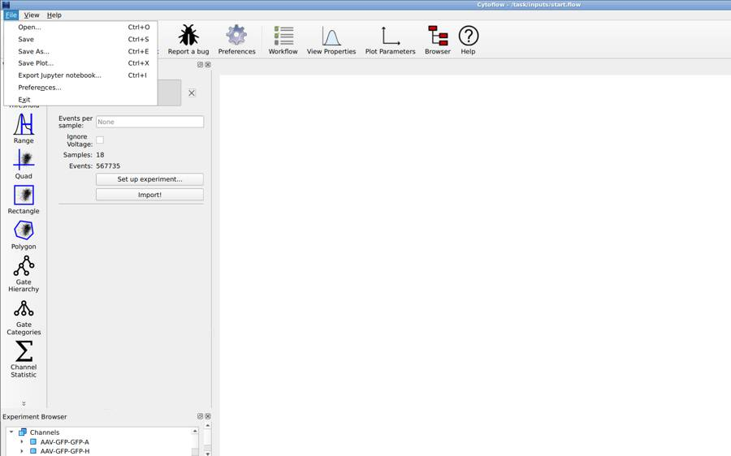
text(await tools.exec_command({cmd:"cu click 64 100 && cu paste /task/outputs/workflow.flow && cu screenshot /tmp/screen.png",max_output_tokens:1000}));
image((await tools.view_image({path:"/tmp/screen.png"})).image_url);
Script completed Wall time 1.5 seconds Output:
{"chunk_id":"4615c1","wall_time_seconds":1.34499308,"exit_code":0,"original_token_count":4,"output":"/tmp/screen.png\n"}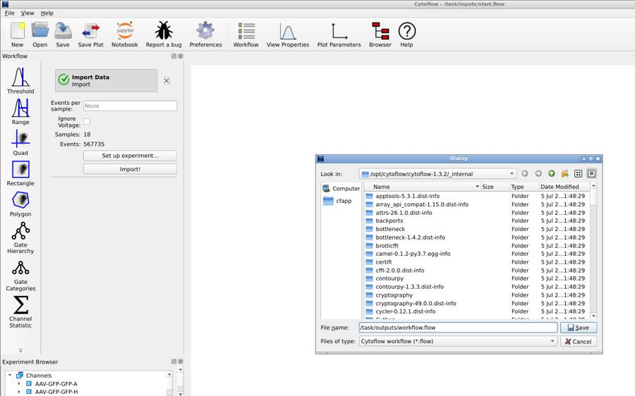
text(await tools.exec_command({cmd:"cu click 1315 745 && cu click 47 456 && cu screenshot /tmp/screen.png",max_output_tokens:1000}));
image((await tools.view_image({path:"/tmp/screen.png"})).image_url);
Script completed Wall time 0.3 seconds Output:
{"chunk_id":"679348","wall_time_seconds":0.111678283,"exit_code":0,"original_token_count":4,"output":"/tmp/screen.png\n"}
text(await tools.exec_command({cmd:"cu screenshot /tmp/screen.png",max_output_tokens:1000}));
image((await tools.view_image({path:"/tmp/screen.png"})).image_url);
Script completed Wall time 0.1 seconds Output:
{"chunk_id":"d38e25","wall_time_seconds":0.00000336,"exit_code":0,"original_token_count":4,"output":"/tmp/screen.png\n"}
text(await tools.exec_command({cmd:"cu click 268 325 && cu type cells && cu click 353 354 && cu screenshot /tmp/screen.png",max_output_tokens:1000}));
image((await tools.view_image({path:"/tmp/screen.png"})).image_url);
Script completed Wall time 0.4 seconds Output:
{"chunk_id":"97167c","wall_time_seconds":0.24011408,"exit_code":0,"original_token_count":4,"output":"/tmp/screen.png\n"}
text(await tools.exec_command({cmd:"cu click 223 424 && cu click 356 383 && cu key s && cu key Return && cu click 653 70 && cu screenshot /tmp/screen.png",max_output_tokens:1000}));
image((await tools.view_image({path:"/tmp/screen.png"})).image_url);
Script completed Wall time 0.4 seconds Output:
{"chunk_id":"0f1a1b","wall_time_seconds":0.246755386,"exit_code":0,"original_token_count":4,"output":"/tmp/screen.png\n"}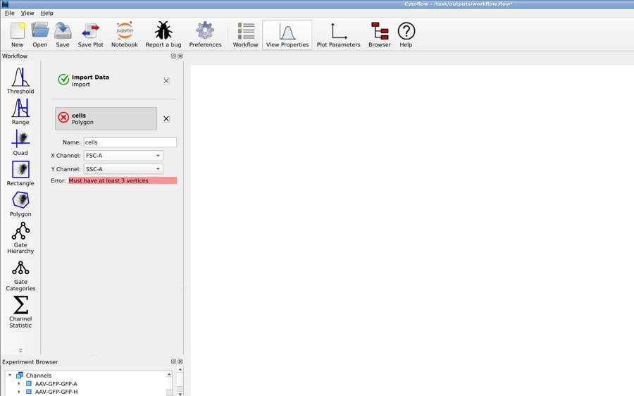
text(await tools.exec_command({cmd:"cu screenshot /tmp/screen.png",max_output_tokens:1000}));
image((await tools.view_image({path:"/tmp/screen.png"})).image_url);
Script completed Wall time 0.1 seconds Output:
{"chunk_id":"ad294c","wall_time_seconds":0.00000381,"exit_code":0,"original_token_count":4,"output":"/tmp/screen.png\n"}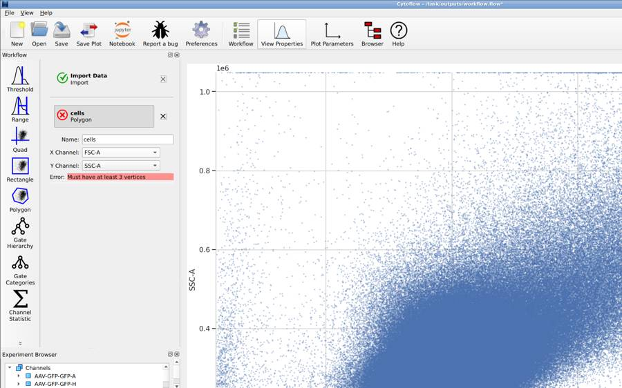
text(await tools.exec_command({cmd:"cu click 650 70 && cu screenshot /tmp/screen.png",max_output_tokens:1000}));
image((await tools.view_image({path:"/tmp/screen.png"})).image_url);
Script completed Wall time 0.2 seconds Output:
{"chunk_id":"b48d83","wall_time_seconds":0.058138378,"exit_code":0,"original_token_count":4,"output":"/tmp/screen.png\n"}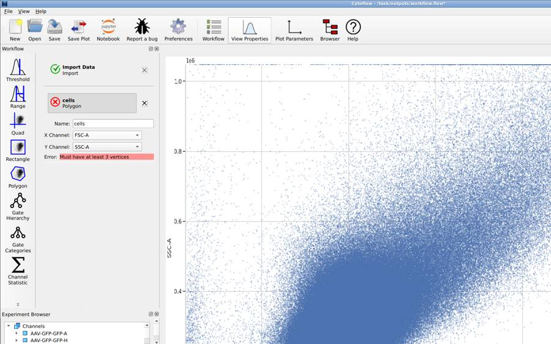
text(await tools.exec_command({cmd:"cu click 751 9 double && cu screenshot /tmp/screen.png",max_output_tokens:1000}));
image((await tools.view_image({path:"/tmp/screen.png"})).image_url);
Script completed Wall time 0.3 seconds Output:
{"chunk_id":"25e70c","wall_time_seconds":0.137756415,"exit_code":0,"original_token_count":4,"output":"/tmp/screen.png\n"}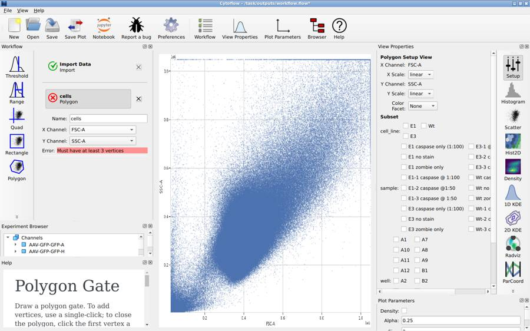
text(await tools.exec_command({cmd:"cu click 529 777 && cu click 582 797 && cu click 794 678 && cu click 998 493 && cu click 998 187 && cu click 758 295 && cu click 569 545 && cu click 529 777 && cu key ctrl+s && cu screenshot /tmp/screen.png",max_output_tokens:1000}));
image((await tools.view_image({path:"/tmp/screen.png"})).image_url);
Script completed Wall time 1.0 seconds Output:
{"chunk_id":"d6b4bd","wall_time_seconds":0.80471866,"exit_code":0,"original_token_count":4,"output":"/tmp/screen.png\n"}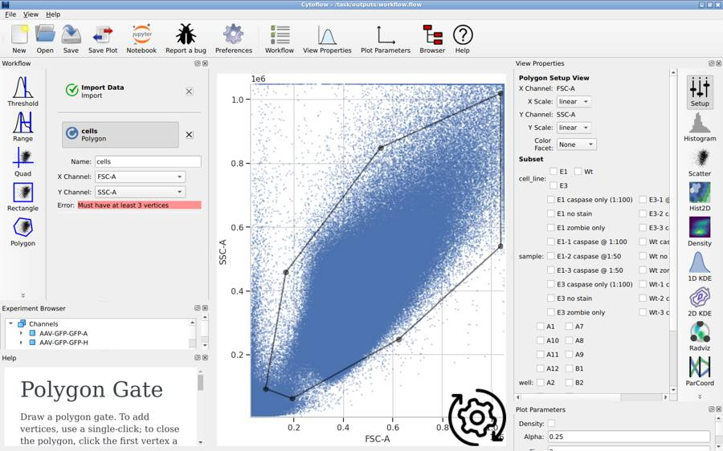
text(await tools.exec_command({cmd:"cu click 47 453 && cu screenshot /tmp/screen.png",max_output_tokens:1000}));
image((await tools.view_image({path:"/tmp/screen.png"})).image_url);
Script completed Wall time 0.2 seconds Output:
{"chunk_id":"08e6e9","wall_time_seconds":0.035171819,"exit_code":0,"original_token_count":4,"output":"/tmp/screen.png\n"}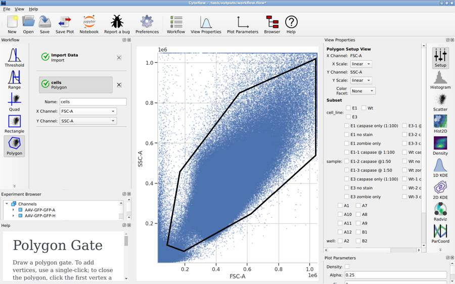
text(await tools.exec_command({cmd:"cu screenshot /tmp/screen.png",max_output_tokens:1000}));
image((await tools.view_image({path:"/tmp/screen.png"})).image_url);
Script completed Wall time 0.1 seconds Output:
{"chunk_id":"dae376","wall_time_seconds":0.00000413,"exit_code":0,"original_token_count":4,"output":"/tmp/screen.png\n"}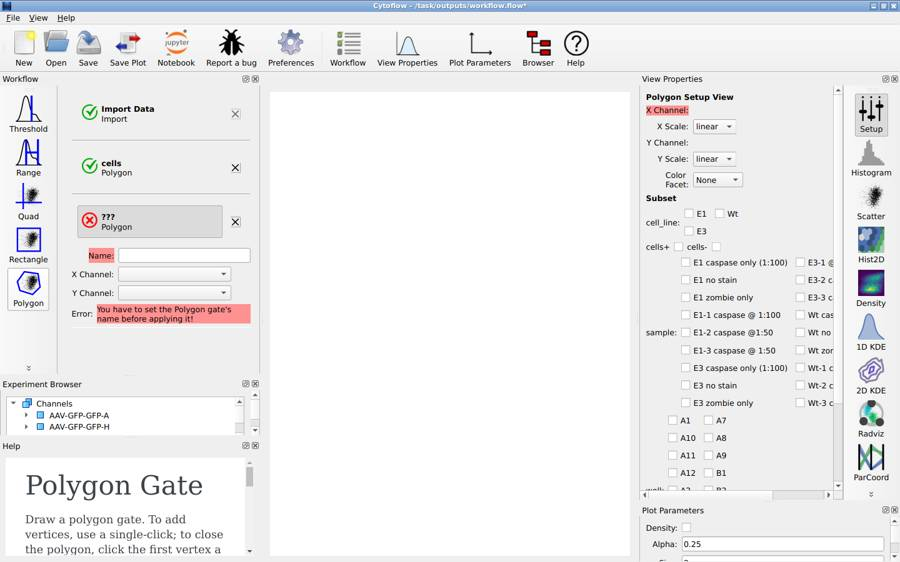
text(await tools.exec_command({cmd:"cu click 263 409 && cu type singlet_shape && cu click 350 439 && cu key f && cu key Return && cu click 357 469 && cu key f && cu key Down && cu key Return && cu click 1085 394 && cu screenshot /tmp/screen.png",max_output_tokens:1000}));
image((await tools.view_image({path:"/tmp/screen.png"})).image_url);
Script completed Wall time 0.9 seconds Output:
{"chunk_id":"26969e","wall_time_seconds":0.747059593,"exit_code":0,"original_token_count":4,"output":"/tmp/screen.png\n"}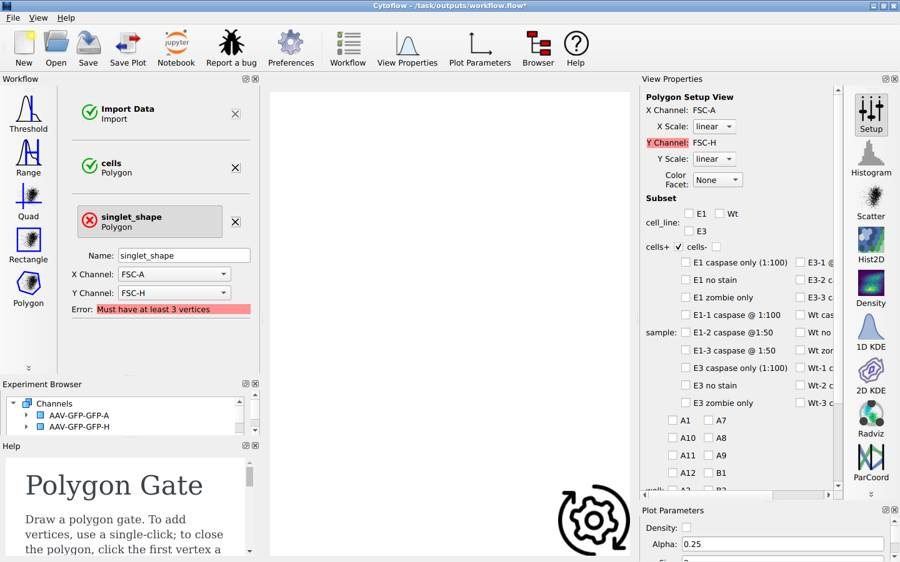
text(await tools.exec_command({cmd:"cu screenshot /tmp/screen.png",max_output_tokens:1000}));
image((await tools.view_image({path:"/tmp/screen.png"})).image_url);
Script completed Wall time 0.1 seconds Output:
{"chunk_id":"e6a655","wall_time_seconds":0.00000383,"exit_code":0,"original_token_count":4,"output":"/tmp/screen.png\n"}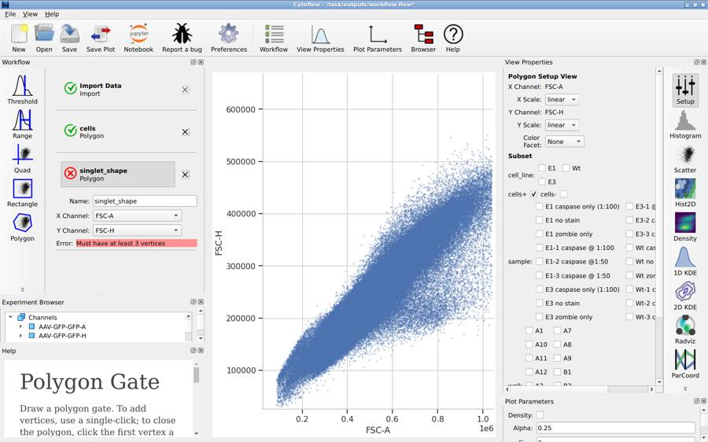
text(await tools.exec_command({cmd:"cu click 570 807 && cu click 707 701 && cu click 997 489 && cu click 997 329 && cu click 707 594 && cu click 570 738 && cu click 570 807 && cu click 47 526 && cu screenshot /tmp/screen.png",max_output_tokens:1000}));
image((await tools.view_image({path:"/tmp/screen.png"})).image_url);
Script completed Wall time 0.9 seconds Output:
{"chunk_id":"55dcf8","wall_time_seconds":0.766616538,"exit_code":0,"original_token_count":4,"output":"/tmp/screen.png\n"}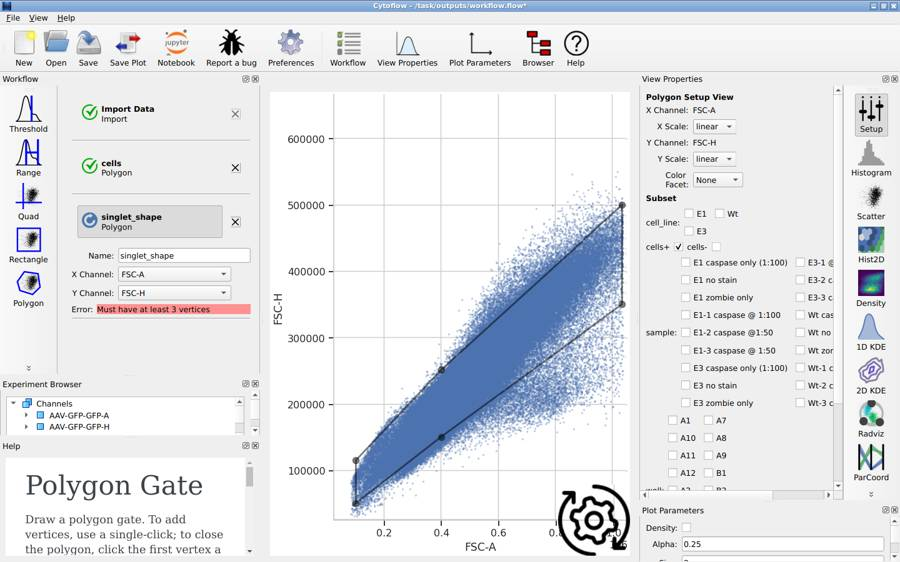
text(await tools.exec_command({cmd:"cu screenshot /tmp/screen.png",max_output_tokens:1000}));
image((await tools.view_image({path:"/tmp/screen.png"})).image_url);
Script completed Wall time 0.1 seconds Output:
{"chunk_id":"b78bb9","wall_time_seconds":0.00000389,"exit_code":0,"original_token_count":4,"output":"/tmp/screen.png\n"}text(await tools.exec_command({cmd:"cu click 48 524 && cu screenshot /tmp/screen.png",max_output_tokens:1000}));
image((await tools.view_image({path:"/tmp/screen.png"})).image_url);
Script completed Wall time 0.2 seconds Output:
{"chunk_id":"6d4f55","wall_time_seconds":0.025185231,"exit_code":0,"original_token_count":4,"output":"/tmp/screen.png\n"}text(await tools.exec_command({cmd:"cu screenshot /tmp/screen.png",max_output_tokens:1000}));
image((await tools.view_image({path:"/tmp/screen.png"})).image_url);
Script completed Wall time 0.1 seconds Output:
{"chunk_id":"2ff986","wall_time_seconds":0.00000324,"exit_code":0,"original_token_count":4,"output":"/tmp/screen.png\n"}text(await tools.exec_command({cmd:"cu scroll 52 479 down 3 && cu screenshot /tmp/screen.png",max_output_tokens:1000}));
image((await tools.view_image({path:"/tmp/screen.png"})).image_url);
Script completed Wall time 0.4 seconds Output:
{"chunk_id":"76b4de","wall_time_seconds":0.225463288,"exit_code":0,"original_token_count":4,"output":"/tmp/screen.png\n"}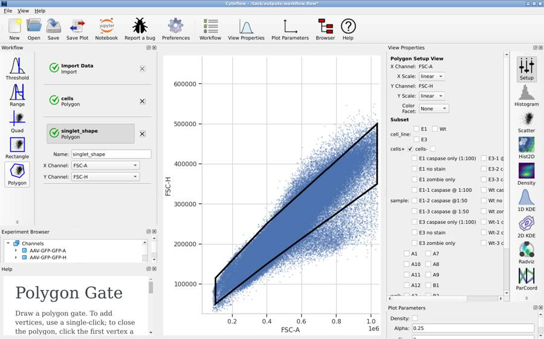
text(await tools.exec_command({cmd:"cu click 47 588 && cu screenshot /tmp/screen.png",max_output_tokens:1000}));
image((await tools.view_image({path:"/tmp/screen.png"})).image_url);
Script completed Wall time 0.2 seconds Output:
{"chunk_id":"86fecf","wall_time_seconds":0.025925832,"exit_code":0,"original_token_count":4,"output":"/tmp/screen.png\n"}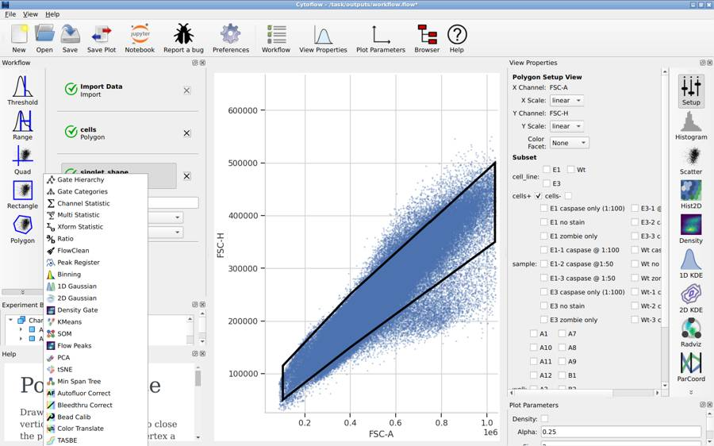
text(await tools.exec_command({cmd:"cu click 175 362 && cu screenshot /tmp/screen.png",max_output_tokens:1000}));
image((await tools.view_image({path:"/tmp/screen.png"})).image_url);
Script completed Wall time 0.2 seconds Output:
{"chunk_id":"3e1039","wall_time_seconds":0.021253988,"exit_code":0,"original_token_count":4,"output":"/tmp/screen.png\n"}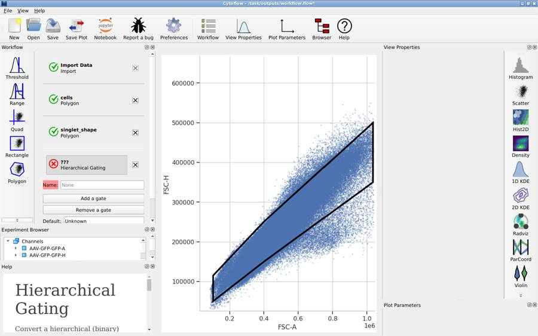
text(await tools.exec_command({cmd:"cu click 408 713 && cu click 408 615 && cu click 236 496 && cu key ctrl+a && cu type singlets && cu click 250 531 && cu screenshot /tmp/screen.png",max_output_tokens:1000}));
image((await tools.view_image({path:"/tmp/screen.png"})).image_url);
Script completed Wall time 0.7 seconds Output:
{"chunk_id":"e5cd54","wall_time_seconds":0.572483987,"exit_code":0,"original_token_count":4,"output":"/tmp/screen.png\n"}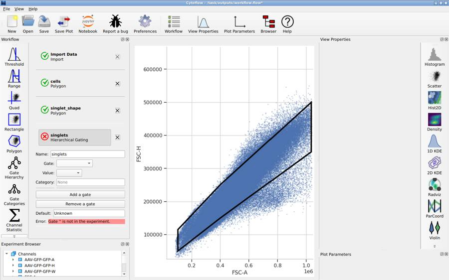
text(await tools.web__run({search_query:[{q:"site.cytoflow.readthedocs.io \"Hierarchical Gating\""},{"q":"site.cytoflow.readthedocs.io boolean gate subset polygon"}],response_length:"long"}));
text(await tools.exec_command({cmd:"cu click 407 783 && cu click 282 525 && cu screenshot /tmp/screen.png",max_output_tokens:1000}));
image((await tools.view_image({path:"/tmp/screen.png"})).image_url);
Script completed Wall time 1.3 seconds Output:
Hierarchical Gating — Cytoflow 0.0 documentation (https://cytoflow.readthedocs.io/en/stable/dev_manual/tutorials/hierarchical_gating.html)
citeturn1search0 [wordlim: 200] Crawled: 4 months ago; A common strategy for manual gating is hierarchical gating – a skilled cytometrist examines sets of one- or two-dimensional plots, one after another, to separate cells into “positive” and “negative” populations. ... In `Cytoflow`, we’d usually add additional metadata to each tube.
# Hierarchical Gating#
A common strategy for manual gating is hierarchical gating – a skilled cytometrist examines sets of one- or two-dimensional plots, one after another, to separate cells into “positive” and “negative” populations. While I like to think that modern cytometry has better, less biased tools to accomplish this task, it is still a necessary one in many contexts, and `Cytoflow` supports it.
This notebook demonstrates a hierarchical gating scheme from `Saeys Y, Van Gassen S, Lambrecht BN. Computational flow cytometry: helping to make sense of high-dimensional immunology data. Nature Reviews Immunology 16:449-462 (2016)`. Our question here is a basic one – what is the count of each cell type in each tube in the six tubes in the experiment? The data were downloaded from the Sayes Lab github and compensated using the bleedthrough matrix in the provided FlowJo workspace before being re-saved by `Cytoflow` – no other data preprocessing was applied.
We want to quantify NK, NK T, T and B cells; neutrophils, DCs, basophils, and macrophages. We are going to use the `channels` attribute of `ImportOp` to map channels to markers, though. (I don’t know which marker is on the AmCyan or Pacific Blue channels, though. And let’s be clear, I am not an immunologist, to know about any of these markers!)
import_op = flow.ImportOp(conditions = {"Tube" : "category"},
tubes = [flow.Tube(file='data/Saeys_11.fcs', conditions = {"Tube" : "11"}),
flow.Tube(file='data/Saeys_12.fcs', conditions = {"Tube" : "12"}),
flow.Tube(file='data/Saeys_13.fcs', conditions = {"Tube" : "13"}),
flow.Tube(file='data/Saeys_28.fcs', conditions = {"Tube" : "28"}),
flow.Tube(file='data/Saeys_30.fcs', conditions = {"Tube" : "30"}),
flow.Tube(file='data/Saeys_31.fcs', conditions = {"Tube" : "31"})],
channels = {"FSC-A" : "FSC_A",
"FSC-H" : "FSC_H",
"APC-Cy7-A" : "Live_Dead",
"AmCyan-A" : "AmCyan",
"BV711-A" : "CD64",
"PE-A" : "CD3",
"PE-Cy5-A" : "CD19",
"APC-A" : "CD161",
"PE-Cy7-A" : "CD11c",
"PerCP-Cy5-5-A" : "MHCII",
"Alexa Fluor 700-A" : "Ly_6G",
"BV605-A" : "CD11b",
"BV786-A" : "FcERI",
"Pacific Blue-A" : "Pacific_Blue"})
ex = import_op.apply()
--------------------------------------------------------------------------------
cytoflow.operations.hierarchy — Cytoflow 0.0 documentation (https://cytoflow.readthedocs.io/en/stable/dev_manual/api/cytoflow.operations.hierarchy.html)
citeturn1search1 [wordlim: 200] Crawled: 4 months ago; # cytoflow.operations.hierarchy#
Convert a hierarchical gating strategy into a categorical condition. ... `Cytoflow` can define these gates, but because it does not have any concept of nested gates, plotting and analyzing this gating strategy can be challenging, particularly in the GUI.
# cytoflow.operations.hierarchy#
Convert a hierarchical gating strategy into a categorical condition.
`HierarchyOp` – Given an ordered list of gate names and their values, create a categorical variable with values set by gate membership.
class cytoflow.operations.hierarchy.HierarchyOp[source]#
Bases: `HasStrictTraits`
Convert a hierarchical (binary) gating strategy into a categorical condition.
Hierarchical gating strategies are quite common when doing manual gating. For example, an 8-stain panel can separate monocytes into macrophages, B cells, NK cells, NKT cells, T cells, DCs, and neutrophils – but then, because these states are mutually exclusive, a reasonable question is “how much of each are there?” `Cytoflow` can define these gates, but because it does not have any concept of nested gates, plotting and analyzing this gating strategy can be challenging, particularly in the GUI.
`HierarchyOp` converts a list of gates into a categorical variable to enable straightforward analysis. For example, monocytes stained with CD64, CD3 and CD19 can differentiate between macrophages and B cells. A user defines a `ThresholdOp` gate to separate CD64+ cells (macrophages) from the rest of the events, then they use a `PolygonOp` to distinguish the CD19+/CD3- cells (B cells) from everything else. `HierarchyOp` can take these two gates and create a categorical condition with the values `Macrophages`, `B_Cells`, and `Unknown`.
The operation is set up by providing a list of conditions, values for those conditions, and the category that condition indicates. Figuring out an event’s category is done by evaluating the hierarchical gates in order. For each event, the first condition/value pair is considered. If that event has that value, its new category is set accordingly. If not, then the next gate in the list is considered. If the event is a member in none of the gates, it receives the category listed in the `default` attribute.
na
… [28,335 more characters not shown]{"chunk_id":"e42194","wall_time_seconds":0.124649843,"exit_code":0,"original_token_count":4,"output":"/tmp/screen.png\n"}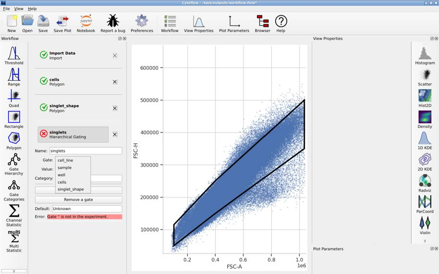
text(await tools.exec_command({cmd:"cu key Escape && cu click 376 442 && cu screenshot /tmp/screen.png",max_output_tokens:1000}));
image((await tools.view_image({path:"/tmp/screen.png"})).image_url);
Script completed Wall time 0.2 seconds Output:
{"chunk_id":"e392aa","wall_time_seconds":0.023802219,"exit_code":0,"original_token_count":4,"output":"/tmp/screen.png\n"}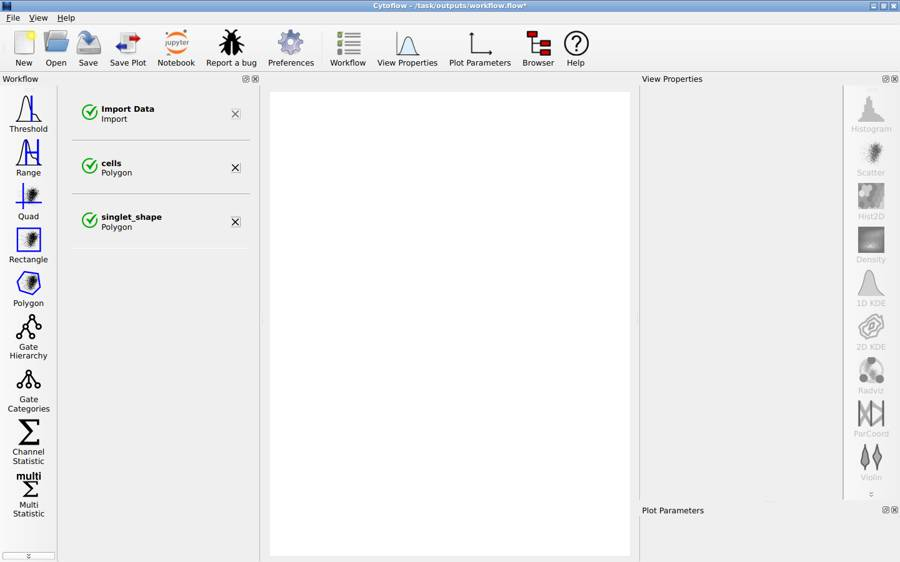
text(await tools.exec_command({cmd:"cu click 230 351 && cu screenshot /tmp/screen.png",max_output_tokens:1000}));
image((await tools.view_image({path:"/tmp/screen.png"})).image_url);
Script completed Wall time 0.2 seconds Output:
{"chunk_id":"6b61c3","wall_time_seconds":0.009151247,"exit_code":0,"original_token_count":4,"output":"/tmp/screen.png\n"}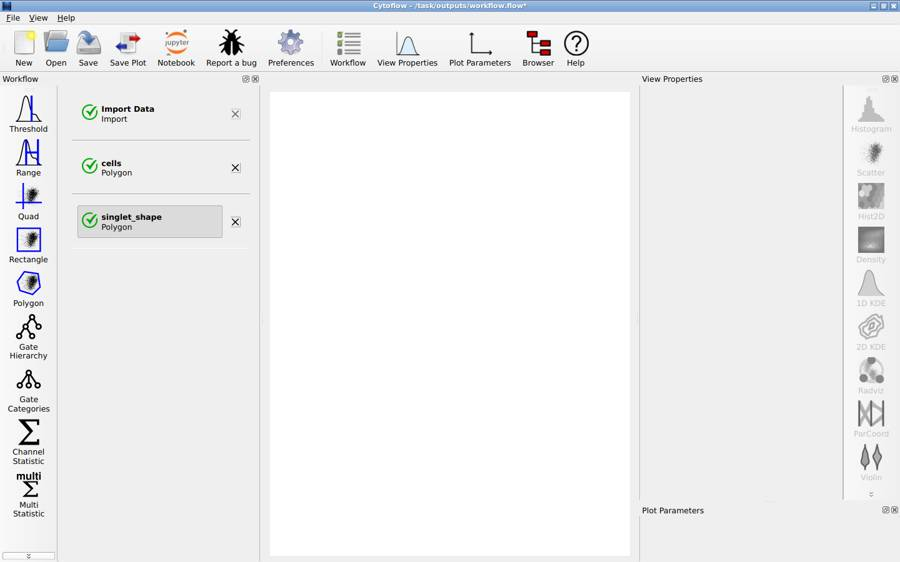
text(await tools.exec_command({cmd:"cu screenshot /tmp/screen.png",max_output_tokens:1000}));
image((await tools.view_image({path:"/tmp/screen.png"})).image_url);
Script completed Wall time 0.1 seconds Output:
{"chunk_id":"017b12","wall_time_seconds":0.00000347,"exit_code":0,"original_token_count":4,"output":"/tmp/screen.png\n"}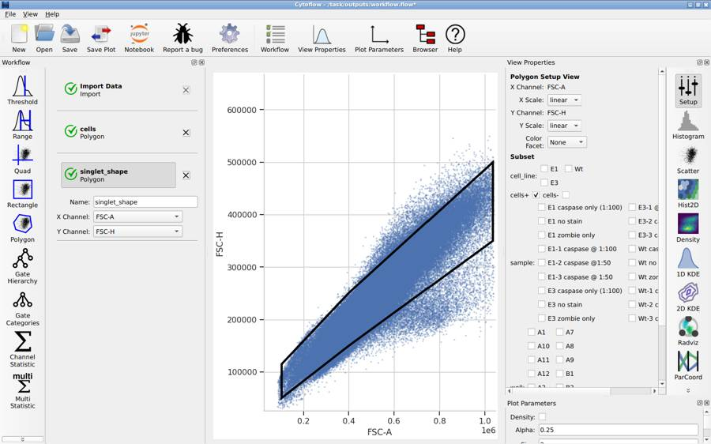
text(await tools.exec_command({cmd:"cu click 275 409 && cu key ctrl+a && cu type singlets && cu key Tab && cu click 45 243 && cu screenshot /tmp/screen.png",max_output_tokens:1000}));
image((await tools.view_image({path:"/tmp/screen.png"})).image_url);
Script completed Wall time 0.6 seconds Output:
{"chunk_id":"69dc47","wall_time_seconds":0.380152277,"exit_code":0,"original_token_count":4,"output":"/tmp/screen.png\n"}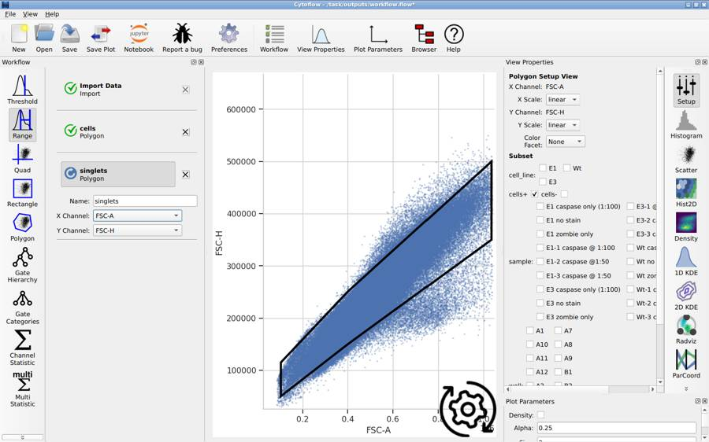
text(await tools.exec_command({cmd:"cu screenshot /tmp/screen.png",max_output_tokens:1000}));
image((await tools.view_image({path:"/tmp/screen.png"})).image_url);
Script completed Wall time 0.1 seconds Output:
{"chunk_id":"a28626","wall_time_seconds":0.0000037,"exit_code":0,"original_token_count":4,"output":"/tmp/screen.png\n"}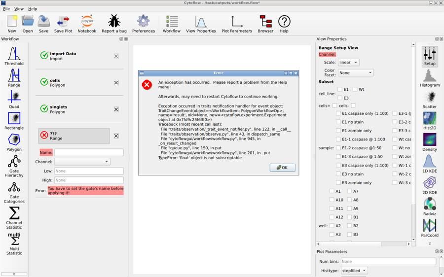
text(await tools.exec_command({cmd:"cu click 913 545 && cu click 260 496 && cu type live && cu click 342 524 && cu key l && cu key Return && cu click 1153 201 && cu key l && cu key l && cu key Return && cu click 1086 341 && cu scroll 1251 666 down 3 && cu screenshot /tmp/screen.png",max_output_tokens:1000}));
image((await tools.view_image({path:"/tmp/screen.png"})).image_url);
Script completed Wall time 1.1 seconds Output:
{"chunk_id":"65fe4d","wall_time_seconds":0.925455611,"exit_code":0,"original_token_count":4,"output":"/tmp/screen.png\n"}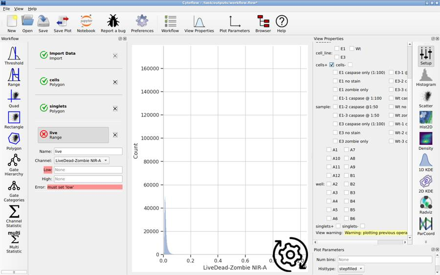
text(await tools.exec_command({cmd:"cu click 1106 739 && cu scroll 1240 377 up 8 && cu click 1154 202 && cu screenshot /tmp/screen.png",max_output_tokens:1000}));
image((await tools.view_image({path:"/tmp/screen.png"})).image_url);
Script completed Wall time 1.1 seconds Output:
{"chunk_id":"44b093","wall_time_seconds":0.926083222,"exit_code":0,"original_token_count":4,"output":"/tmp/screen.png\n"}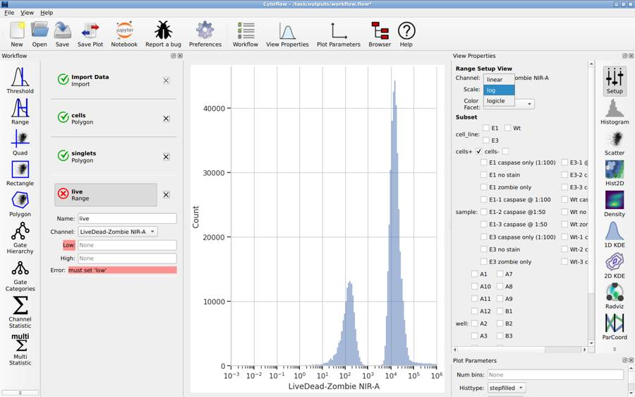
text(await tools.exec_command({cmd:"cu click 1126 227 && cu click 1198 236 && cu screenshot /tmp/screen.png",max_output_tokens:1000}));
image((await tools.view_image({path:"/tmp/screen.png"})).image_url);
Script completed Wall time 0.3 seconds Output:
{"chunk_id":"5db690","wall_time_seconds":0.123677973,"exit_code":0,"original_token_count":4,"output":"/tmp/screen.png\n"}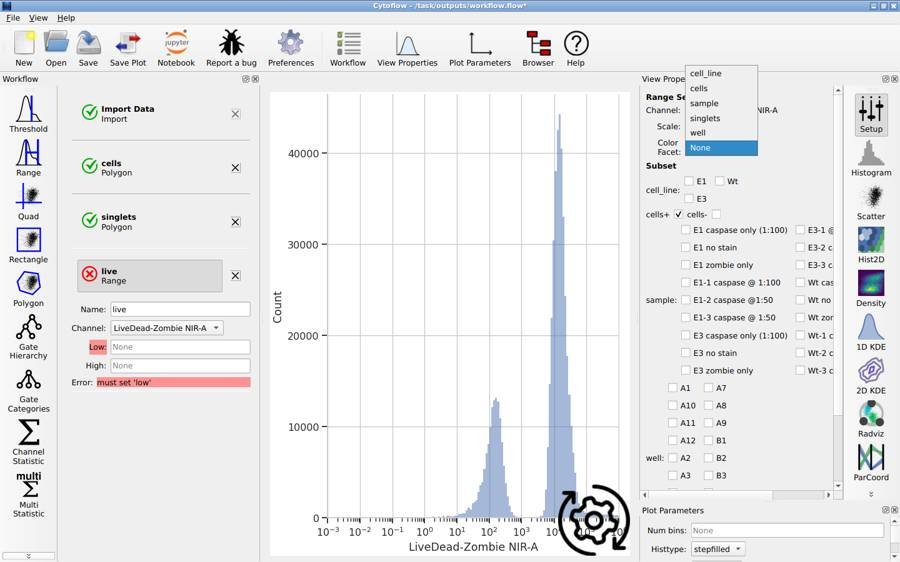
text(await tools.exec_command({cmd:"cu click 1118 211 && cu screenshot /tmp/screen.png",max_output_tokens:1000}));
image((await tools.view_image({path:"/tmp/screen.png"})).image_url);
Script completed Wall time 0.2 seconds Output:
{"chunk_id":"13f6c8","wall_time_seconds":0.016738004,"exit_code":0,"original_token_count":4,"output":"/tmp/screen.png\n"}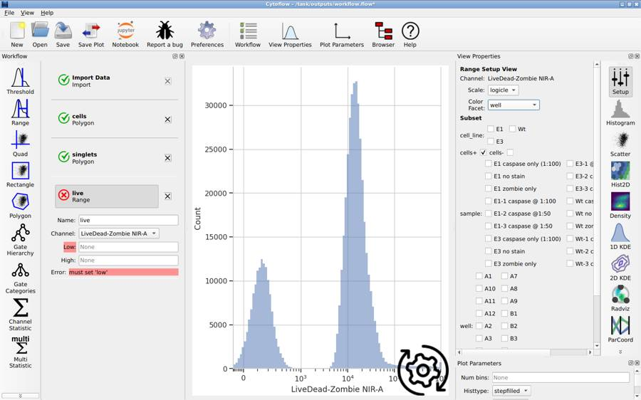
text(await tools.exec_command({cmd:"cu screenshot /tmp/screen.png",max_output_tokens:1000}));
image((await tools.view_image({path:"/tmp/screen.png"})).image_url);
Script completed Wall time 0.1 seconds Output:
{"chunk_id":"55953a","wall_time_seconds":0.00000351,"exit_code":0,"original_token_count":4,"output":"/tmp/screen.png\n"}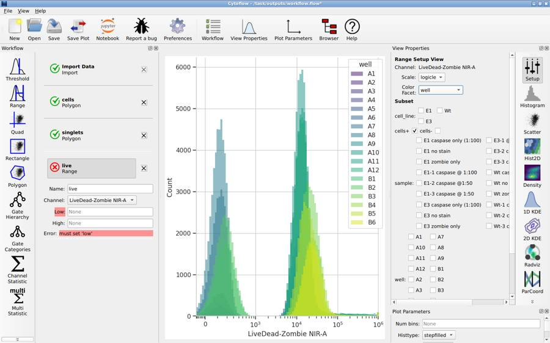
text(await tools.exec_command({cmd:"cu click 1076 761 && cu click 1134 677 && cu click 1134 761 && cu screenshot /tmp/screen.png",max_output_tokens:1000}));
image((await tools.view_image({path:"/tmp/screen.png"})).image_url);
Script completed Wall time 0.4 seconds Output:
{"chunk_id":"ea1653","wall_time_seconds":0.22785741,"exit_code":0,"original_token_count":4,"output":"/tmp/screen.png\n"}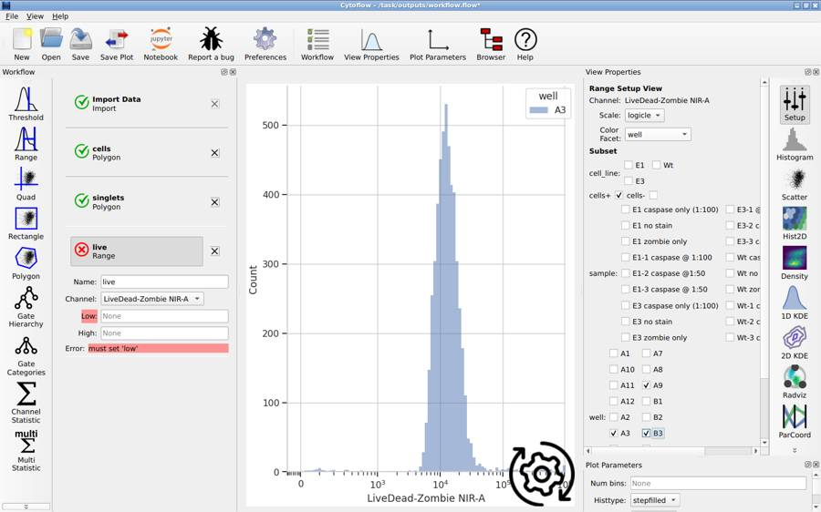
text(await tools.exec_command({cmd:"cu screenshot /tmp/screen.png",max_output_tokens:1000}));
image((await tools.view_image({path:"/tmp/screen.png"})).image_url);
Script completed Wall time 0.1 seconds Output:
{"chunk_id":"dc9468","wall_time_seconds":0.00000315,"exit_code":0,"original_token_count":4,"output":"/tmp/screen.png\n"}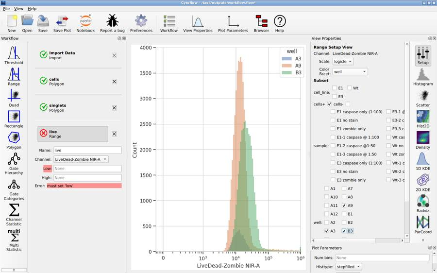
text(await tools.exec_command({cmd:"cu click 269 556 && cu key ctrl+a && cu type -1000000000 && cu click 260 586 && cu key ctrl+a && cu type 50000 && cu key Tab && cu key ctrl+s && cu screenshot /tmp/screen.png",max_output_tokens:1000}));
image((await tools.view_image({path:"/tmp/screen.png"})).image_url);
Script completed Wall time 0.8 seconds Output:
{"chunk_id":"3a8957","wall_time_seconds":0.633014127,"exit_code":0,"original_token_count":4,"output":"/tmp/screen.png\n"}text(await tools.exec_command({cmd:"cu screenshot /tmp/screen.png",max_output_tokens:1000}));
image((await tools.view_image({path:"/tmp/screen.png"})).image_url);
Script completed Wall time 0.1 seconds Output:
{"chunk_id":"522766","wall_time_seconds":0.00000348,"exit_code":0,"original_token_count":4,"output":"/tmp/screen.png\n"}text(await tools.exec_command({cmd:"cu click 46 177 && cu screenshot /tmp/screen.png",max_output_tokens:1000}));
image((await tools.view_image({path:"/tmp/screen.png"})).image_url);
text(await tools.clock__curr_time({}));
Script completed Wall time 0.2 seconds Output:
{"chunk_id":"59b147","wall_time_seconds":0.017838004,"exit_code":0,"original_token_count":4,"output":"/tmp/screen.png\n"}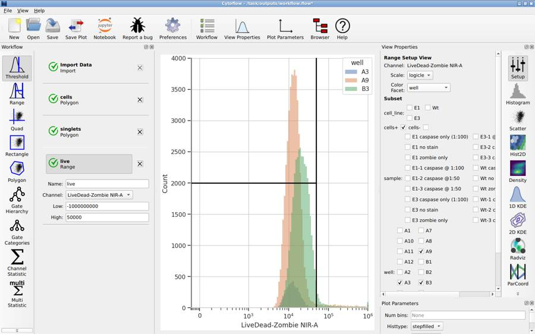
{"current_time":"2026-11-06 00:36:04 UTC"}text(await tools.exec_command({cmd:"cu screenshot /tmp/screen.png",max_output_tokens:1000}));
image((await tools.view_image({path:"/tmp/screen.png"})).image_url);
Script completed Wall time 0.1 seconds Output:
{"chunk_id":"43c4ba","wall_time_seconds":0.00000358,"exit_code":0,"original_token_count":4,"output":"/tmp/screen.png\n"}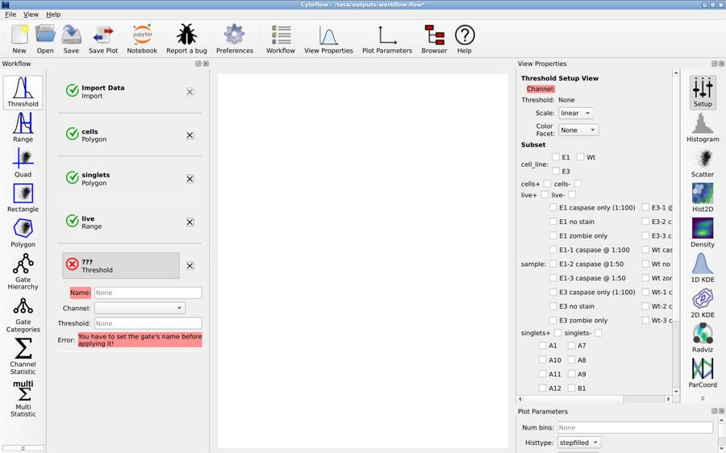
text(await tools.exec_command({cmd:"cu click 278 581 && cu key ctrl+a && cu type caspase_positive && cu click 353 612 && cu key a && cu key Return && cu click 1165 225 && cu key End && cu key Return && cu click 1086 363 && cu click 1080 386 && cu click 1106 661 && cu click 1175 257 && cu key w && cu key Return && cu screenshot /tmp/screen.png",max_output_tokens:1000}));
image((await tools.view_image({path:"/tmp/screen.png"})).image_url);
Script completed Wall time 1.4 seconds Output:
{"chunk_id":"7b68b1","wall_time_seconds":1.183535745,"exit_code":0,"original_token_count":4,"output":"/tmp/screen.png\n"}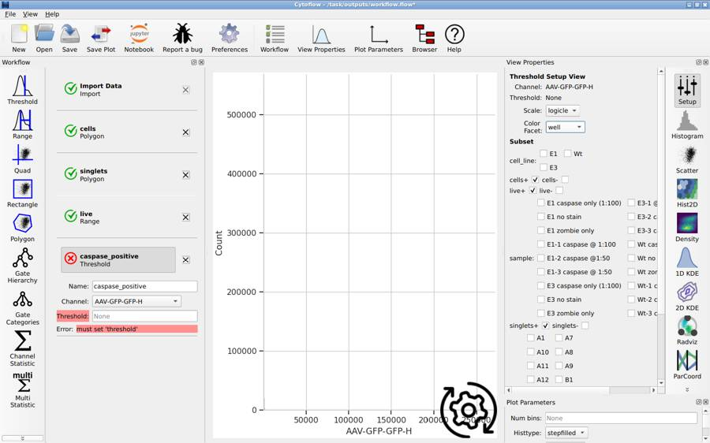
text(await tools.exec_command({cmd:"cu click 355 613 && cu key Home && cu key Return && cu click 1076 686 && cu click 1134 686 && cu click 1134 770 && cu screenshot /tmp/screen.png",max_output_tokens:1000}));
image((await tools.view_image({path:"/tmp/screen.png"})).image_url);
Script completed Wall time 0.5 seconds Output:
{"chunk_id":"215378","wall_time_seconds":0.365739514,"exit_code":0,"original_token_count":4,"output":"/tmp/screen.png\n"}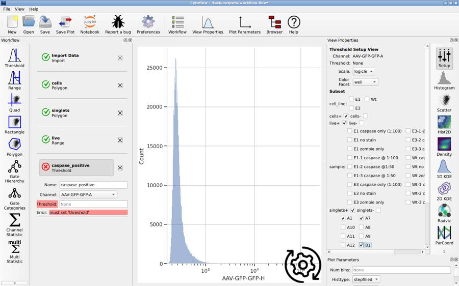
text(await tools.exec_command({cmd:"cu screenshot /tmp/screen.png",max_output_tokens:1000}));
image((await tools.view_image({path:"/tmp/screen.png"})).image_url);
Script completed Wall time 0.1 seconds Output:
{"chunk_id":"98314d","wall_time_seconds":0.00000337,"exit_code":0,"original_token_count":4,"output":"/tmp/screen.png\n"}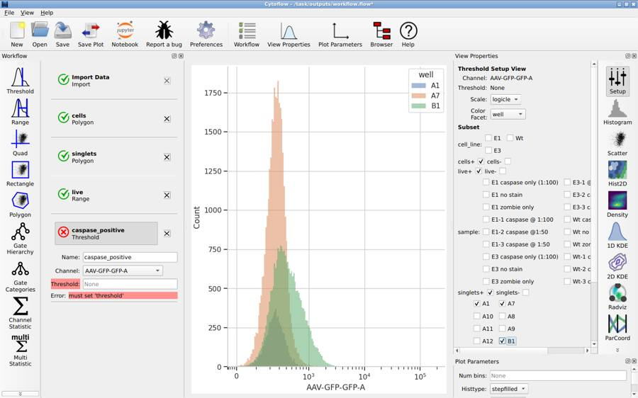
text(await tools.exec_command({cmd:"cu click 1134 743 && cu scroll 1242 662 down 3 && cu screenshot /tmp/screen.png",max_output_tokens:1000}));
image((await tools.view_image({path:"/tmp/screen.png"})).image_url);
Script completed Wall time 0.5 seconds Output:
{"chunk_id":"91354e","wall_time_seconds":0.32492413,"exit_code":0,"original_token_count":4,"output":"/tmp/screen.png\n"}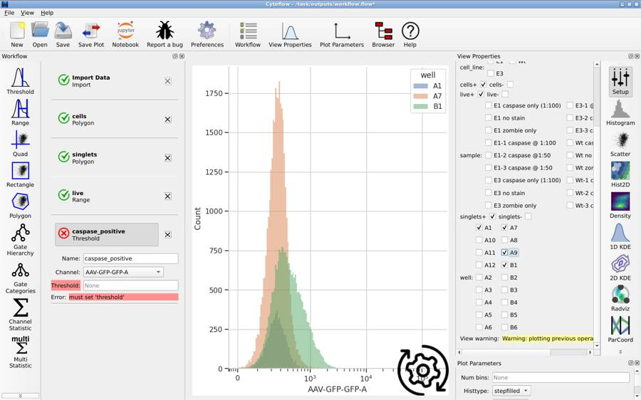
text(await tools.exec_command({cmd:"cu click 1076 651 && cu click 1134 651 && cu click 260 641 && cu key ctrl+a && cu type 4000 && cu key Tab && cu screenshot /tmp/screen.png",max_output_tokens:1000}));
image((await tools.view_image({path:"/tmp/screen.png"})).image_url);
Script completed Wall time 0.6 seconds Output:
{"chunk_id":"594516","wall_time_seconds":0.377660455,"exit_code":0,"original_token_count":4,"output":"/tmp/screen.png\n"}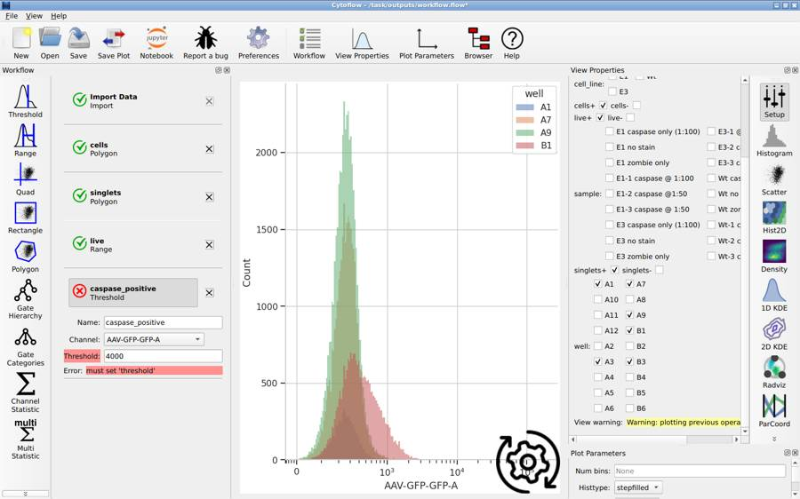
text(await tools.exec_command({cmd:"cu screenshot /tmp/screen.png",max_output_tokens:1000}));
image((await tools.view_image({path:"/tmp/screen.png"})).image_url);
Script completed Wall time 0.1 seconds Output:
{"chunk_id":"555af3","wall_time_seconds":0.00000414,"exit_code":0,"original_token_count":4,"output":"/tmp/screen.png\n"}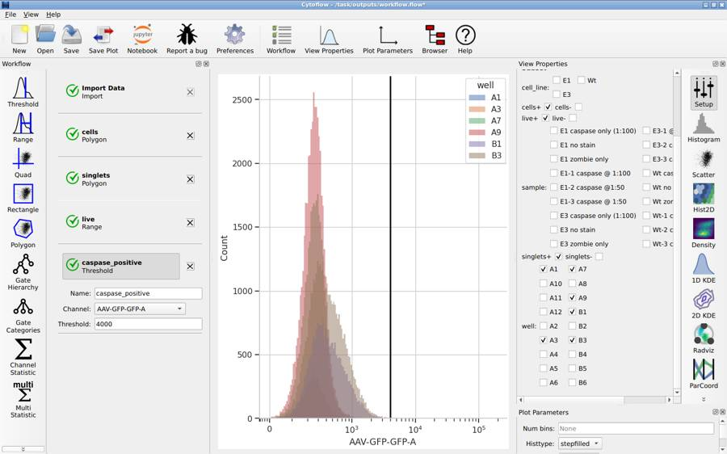
text(await tools.exec_command({cmd:"cu click 1076 533 && cu click 1134 533 && cu click 1134 589 && cu click 1134 617 && cu click 1076 673 && cu click 1134 673 && cu key ctrl+s && cu screenshot /tmp/screen.png",max_output_tokens:1000}));
image((await tools.view_image({path:"/tmp/screen.png"})).image_url);
Script completed Wall time 0.7 seconds Output:
{"chunk_id":"64b359","wall_time_seconds":0.571114546,"exit_code":0,"original_token_count":4,"output":"/tmp/screen.png\n"}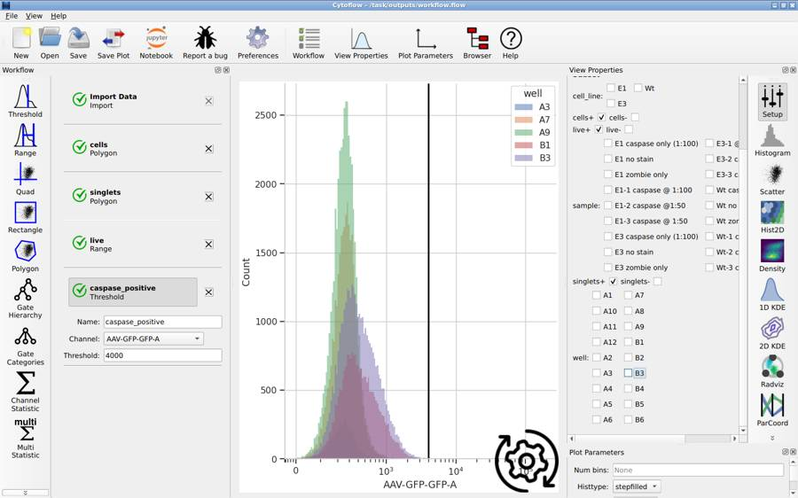
text(await tools.exec_command({cmd:"cu screenshot /tmp/screen.png",max_output_tokens:1000}));
image((await tools.view_image({path:"/tmp/screen.png"})).image_url);
Script completed Wall time 0.1 seconds Output:
{"chunk_id":"6b679c","wall_time_seconds":0.00000415,"exit_code":0,"original_token_count":4,"output":"/tmp/screen.png\n"}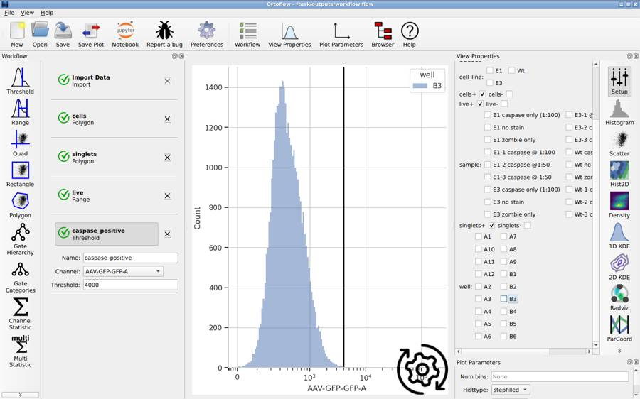
text(await tools.exec_command({cmd:"sleep 2 && cu screenshot /tmp/screen.png",max_output_tokens:1000}));
image((await tools.view_image({path:"/tmp/screen.png"})).image_url);
Script completed Wall time 2.1 seconds Output:
{"chunk_id":"b01004","wall_time_seconds":1.914807235,"exit_code":0,"original_token_count":4,"output":"/tmp/screen.png\n"}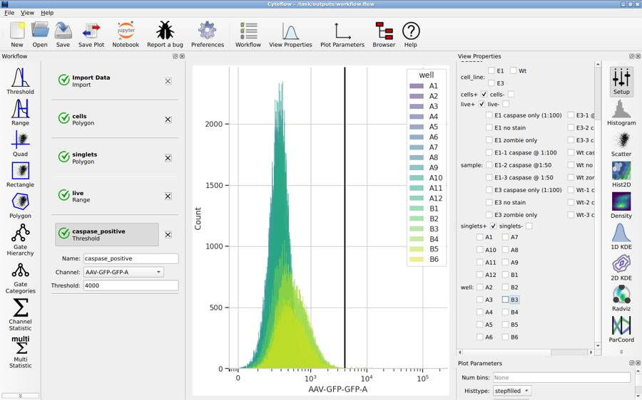
text(await tools.exec_command({cmd:"cu click 44 697 && sleep 1 && cu screenshot /tmp/screen.png",max_output_tokens:1000}));
image((await tools.view_image({path:"/tmp/screen.png"})).image_url);
Script completed Wall time 1.2 seconds Output:
{"chunk_id":"aebaab","wall_time_seconds":1.017674478,"exit_code":0,"original_token_count":4,"output":"/tmp/screen.png\n"}text(await tools.exec_command({cmd:"cu click 256 668 && cu key ctrl+a && cu type count_all && cu click 346 698 && cu key Home && cu key Down && cu key Down && cu key Down && cu key Return && cu click 318 728 && cu screenshot /tmp/screen.png",max_output_tokens:1000}));
image((await tools.view_image({path:"/tmp/screen.png"})).image_url);
Script completed Wall time 0.7 seconds Output:
{"chunk_id":"dcd447","wall_time_seconds":0.563452769,"exit_code":0,"original_token_count":4,"output":"/tmp/screen.png\n"}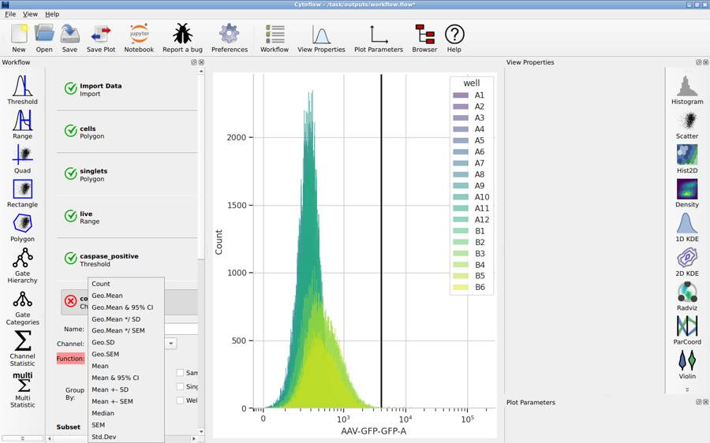
text(await tools.exec_command({cmd:"cu click 207 575 && cu click 365 812 && cu scroll 320 787 down 6 && sleep 2 && cu screenshot /tmp/screen.png",max_output_tokens:1000}));
image((await tools.view_image({path:"/tmp/screen.png"})).image_url);
Script completed Wall time 2.9 seconds Output:
{"chunk_id":"61d38a","wall_time_seconds":2.726569851,"exit_code":0,"original_token_count":4,"output":"/tmp/screen.png\n"}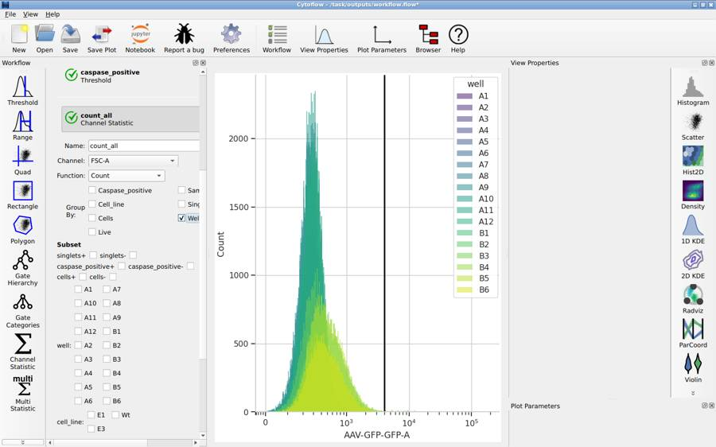
text(await tools.exec_command({cmd:"cu click 1394 791 && cu screenshot /tmp/screen.png",max_output_tokens:1000}));
image((await tools.view_image({path:"/tmp/screen.png"})).image_url);
Script completed Wall time 0.2 seconds Output:
{"chunk_id":"fa9dcd","wall_time_seconds":0.016390093,"exit_code":0,"original_token_count":4,"output":"/tmp/screen.png\n"}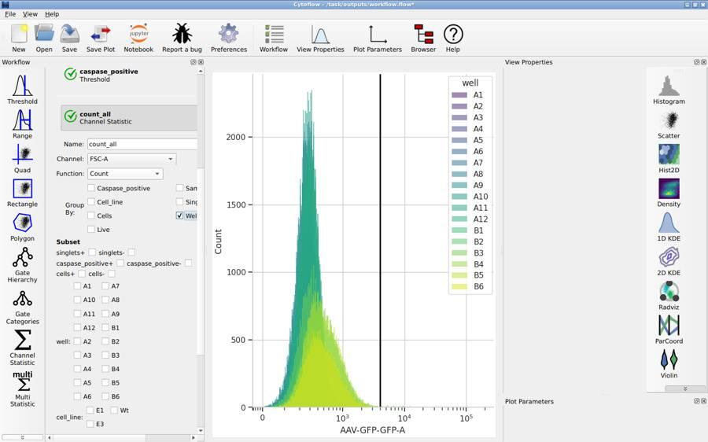
text(await tools.exec_command({cmd:"cu click 1431 817 && cu screenshot /tmp/screen.png",max_output_tokens:1000}));
image((await tools.view_image({path:"/tmp/screen.png"})).image_url);
Script completed Wall time 0.2 seconds Output:
{"chunk_id":"fb696a","wall_time_seconds":0.016111713,"exit_code":0,"original_token_count":4,"output":"/tmp/screen.png\n"}text(await tools.exec_command({cmd:"cu click 1394 890 && cu screenshot /tmp/screen.png",max_output_tokens:1000}));
image((await tools.view_image({path:"/tmp/screen.png"})).image_url);
Script completed Wall time 0.2 seconds Output:
{"chunk_id":"d6fa35","wall_time_seconds":0.014693972,"exit_code":0,"original_token_count":4,"output":"/tmp/screen.png\n"}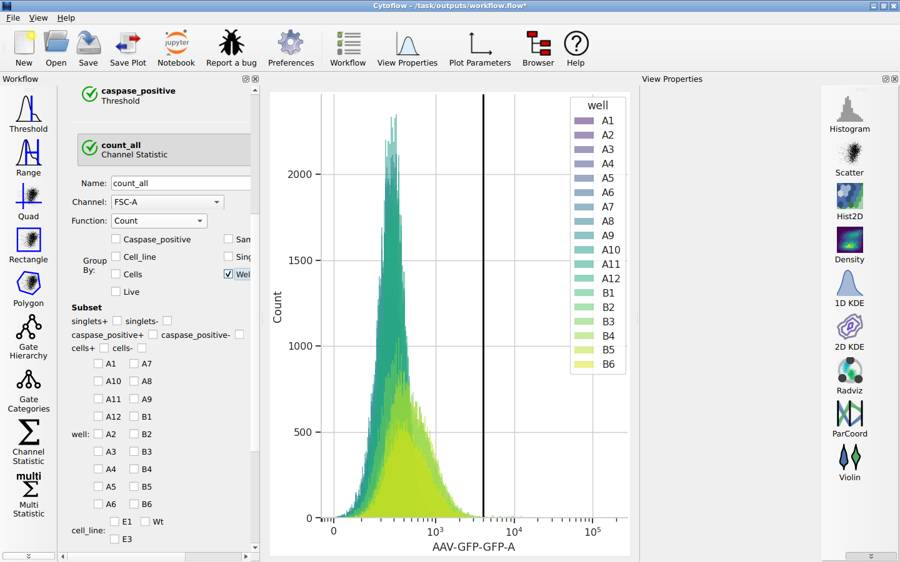
text(await tools.exec_command({cmd:"cu drag 1017 506 861 506 && cu click 1392 889 && cu screenshot /tmp/screen.png",max_output_tokens:1000}));
image((await tools.view_image({path:"/tmp/screen.png"})).image_url);
Script completed Wall time 0.2 seconds Output:
{"chunk_id":"f8fabe","wall_time_seconds":0.044748868,"exit_code":0,"original_token_count":4,"output":"/tmp/screen.png\n"}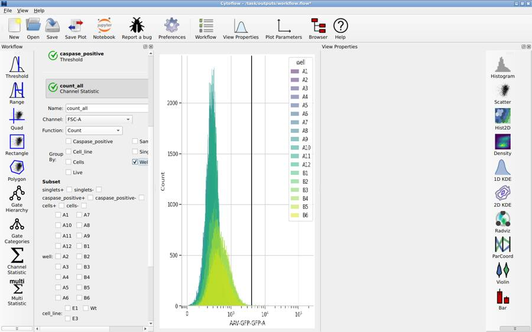
text(await tools.exec_command({cmd:"cu click 1395 890 && cu key End && cu screenshot /tmp/screen.png",max_output_tokens:1000}));
image((await tools.view_image({path:"/tmp/screen.png"})).image_url);
Script completed Wall time 0.2 seconds Output:
{"chunk_id":"b19c47","wall_time_seconds":0.031632517,"exit_code":0,"original_token_count":4,"output":"/tmp/screen.png\n"}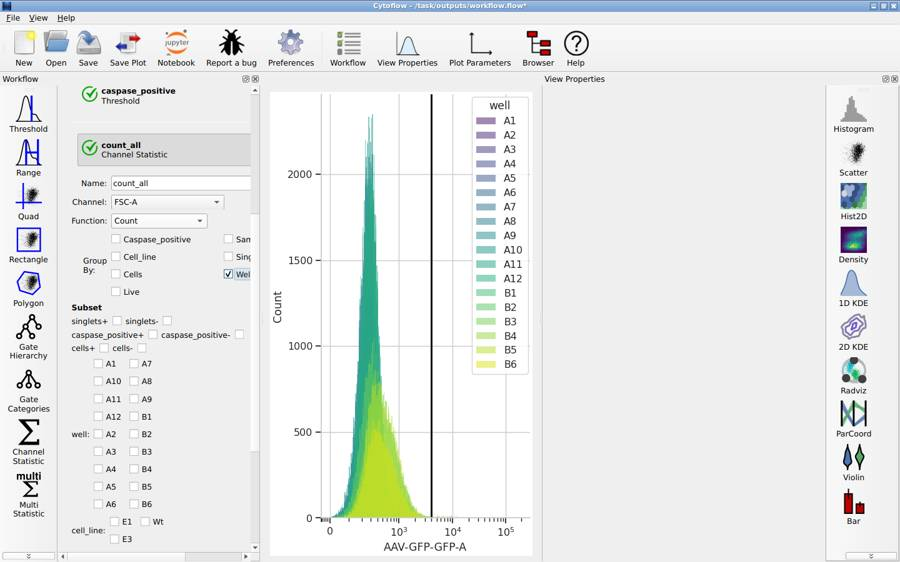
text(await tools.exec_command({cmd:"cu click 63 30 && cu screenshot /tmp/screen.png",max_output_tokens:1000}));
image((await tools.view_image({path:"/tmp/screen.png"})).image_url);
Script completed Wall time 0.2 seconds Output:
{"chunk_id":"e1bd21","wall_time_seconds":0.018622506,"exit_code":0,"original_token_count":4,"output":"/tmp/screen.png\n"}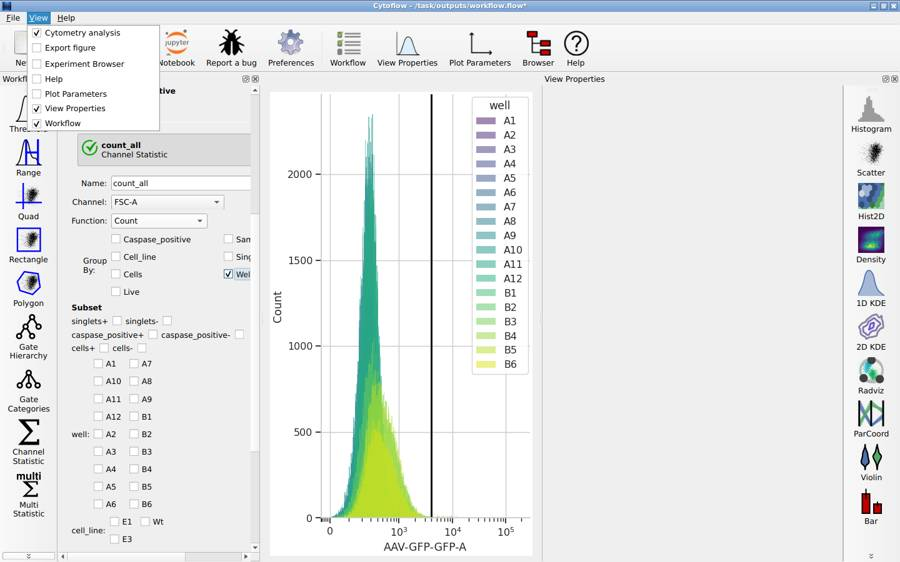
text(await tools.exec_command({cmd:"cu key Escape && cu drag 975 126 687 189 && cu screenshot /tmp/screen.png",max_output_tokens:1000}));
image((await tools.view_image({path:"/tmp/screen.png"})).image_url);
Script completed Wall time 0.2 seconds Output:
{"chunk_id":"fe8308","wall_time_seconds":0.00000369,"exit_code":0,"original_token_count":4,"output":"/tmp/screen.png\n"}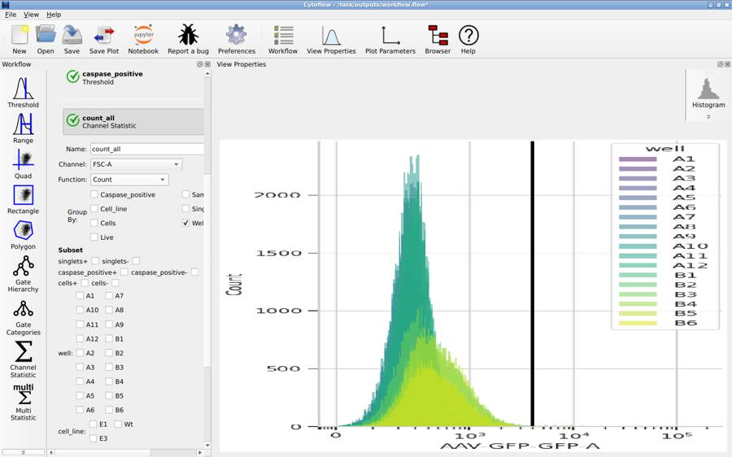
text(await tools.exec_command({cmd:"cu click 1393 230 && cu screenshot /tmp/screen.png",max_output_tokens:1000}));
image((await tools.view_image({path:"/tmp/screen.png"})).image_url);
Script completed Wall time 0.2 seconds Output:
{"chunk_id":"d82500","wall_time_seconds":0.015340192,"exit_code":0,"original_token_count":4,"output":"/tmp/screen.png\n"}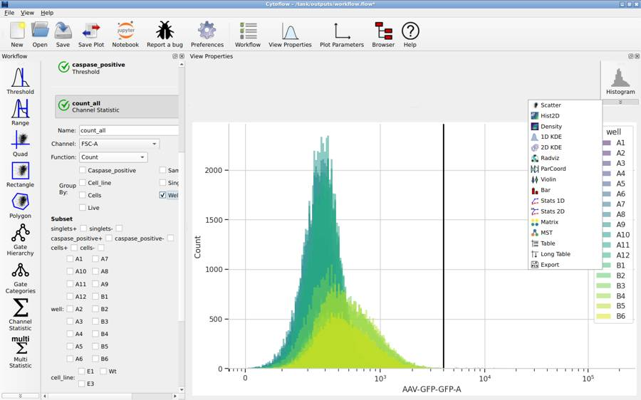
text(await tools.exec_command({cmd:"cu click 1231 547 && sleep 1 && cu screenshot /tmp/screen.png",max_output_tokens:1000}));
image((await tools.view_image({path:"/tmp/screen.png"})).image_url);
Script completed Wall time 1.2 seconds Output:
{"chunk_id":"4ed8de","wall_time_seconds":1.010401242,"exit_code":0,"original_token_count":4,"output":"/tmp/screen.png\n"}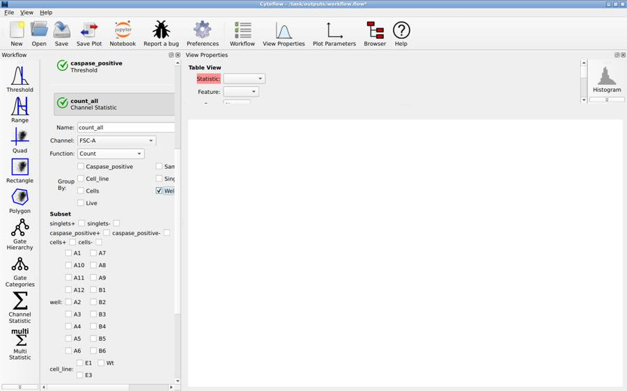
text(await tools.exec_command({cmd:"cu drag 931 259 931 491 && cu click 596 181 && cu key Home && cu key Return && cu click 582 210 && cu key Home && cu key Return && sleep 1 && cu screenshot /tmp/screen.png",max_output_tokens:1000}));
image((await tools.view_image({path:"/tmp/screen.png"})).image_url);
Script completed Wall time 1.4 seconds Output:
{"chunk_id":"faa601","wall_time_seconds":1.210160958,"exit_code":0,"original_token_count":4,"output":"/tmp/screen.png\n"}text(await tools.exec_command({cmd:"cu drag 524 126 1232 450 && cu screenshot /tmp/screen.png",max_output_tokens:1000}));
image((await tools.view_image({path:"/tmp/screen.png"})).image_url);
Script completed Wall time 0.1 seconds Output:
{"chunk_id":"ee52fe","wall_time_seconds":0.00000346,"exit_code":0,"original_token_count":4,"output":"/tmp/screen.png\n"}text(await tools.exec_command({cmd:"sleep 1 && cu screenshot /tmp/screen.png",max_output_tokens:1000}));
image((await tools.view_image({path:"/tmp/screen.png"})).image_url);
Script completed Wall time 1.1 seconds Output:
{"chunk_id":"c44c11","wall_time_seconds":0.905881685,"exit_code":0,"original_token_count":4,"output":"/tmp/screen.png\n"}text(await tools.exec_command({cmd:"cu drag 1218 451 505 151 && sleep 1 && cu screenshot /tmp/screen.png",max_output_tokens:1000}));
image((await tools.view_image({path:"/tmp/screen.png"})).image_url);
Script completed Wall time 1.1 seconds Output:
{"chunk_id":"3a27b5","wall_time_seconds":0.938015612,"exit_code":0,"original_token_count":4,"output":"/tmp/screen.png\n"}text(await tools.exec_command({cmd:"cu drag 933 246 933 584 && cu click 596 181 && cu screenshot /tmp/screen.png",max_output_tokens:1000}));
image((await tools.view_image({path:"/tmp/screen.png"})).image_url);
Script completed Wall time 0.2 seconds Output:
{"chunk_id":"cb8fe4","wall_time_seconds":0.043253296,"exit_code":0,"original_token_count":4,"output":"/tmp/screen.png\n"}text(await tools.exec_command({cmd:"cu click 548 205 && cu click 582 211 && cu screenshot /tmp/screen.png",max_output_tokens:1000}));
image((await tools.view_image({path:"/tmp/screen.png"})).image_url);
Script completed Wall time 0.3 seconds Output:
{"chunk_id":"62e63f","wall_time_seconds":0.113232494,"exit_code":0,"original_token_count":4,"output":"/tmp/screen.png\n"}text(await tools.exec_command({cmd:"cu click 544 211 && cu scroll 758 210 down 2 && cu screenshot /tmp/screen.png",max_output_tokens:1000}));
image((await tools.view_image({path:"/tmp/screen.png"})).image_url);
Script completed Wall time 0.4 seconds Output:
{"chunk_id":"f640a8","wall_time_seconds":0.213780988,"exit_code":0,"original_token_count":4,"output":"/tmp/screen.png\n"}text(await tools.exec_command({cmd:"cu scroll 754 190 up 1 && cu screenshot /tmp/screen.png",max_output_tokens:1000}));
image((await tools.view_image({path:"/tmp/screen.png"})).image_url);
Script completed Wall time 0.2 seconds Output:
{"chunk_id":"fd5b0a","wall_time_seconds":0.007286886,"exit_code":0,"original_token_count":4,"output":"/tmp/screen.png\n"}text(await tools.exec_command({cmd:"cu click 562 178 && cu key w && cu key Return && cu scroll 750 191 down 5 && sleep 1 && cu screenshot /tmp/screen.png",max_output_tokens:1000}));
image((await tools.view_image({path:"/tmp/screen.png"})).image_url);
Script completed Wall time 1.7 seconds Output:
{"chunk_id":"49bf4e","wall_time_seconds":1.5507229219999998,"exit_code":0,"original_token_count":4,"output":"/tmp/screen.png\n"}text(await tools.exec_command({cmd:"cu scroll 752 199 down 6 && cu screenshot /tmp/screen.png",max_output_tokens:1000}));
image((await tools.view_image({path:"/tmp/screen.png"})).image_url);
Script completed Wall time 0.7 seconds Output:
{"chunk_id":"df5f6f","wall_time_seconds":0.513856588,"exit_code":0,"original_token_count":4,"output":"/tmp/screen.png\n"}text(await tools.exec_command({cmd:"cu scroll 752 195 up 5 && cu screenshot /tmp/screen.png",max_output_tokens:1000}));
image((await tools.view_image({path:"/tmp/screen.png"})).image_url);
Script completed Wall time 0.6 seconds Output:
{"chunk_id":"0d1610","wall_time_seconds":0.414997846,"exit_code":0,"original_token_count":4,"output":"/tmp/screen.png\n"}text(await tools.exec_command({cmd:"cu scroll 751 198 down 1 && cu screenshot /tmp/screen.png",max_output_tokens:1000}));
image((await tools.view_image({path:"/tmp/screen.png"})).image_url);
Script completed Wall time 0.2 seconds Output:
{"chunk_id":"893f99","wall_time_seconds":0.012566911,"exit_code":0,"original_token_count":4,"output":"/tmp/screen.png\n"}text(await tools.exec_command({cmd:"cu click 912 185 && cu paste /task/outputs/gui_all_events.csv && cu screenshot /tmp/screen.png",max_output_tokens:1000}));
image((await tools.view_image({path:"/tmp/screen.png"})).image_url);
Script completed Wall time 1.5 seconds Output:
{"chunk_id":"116977","wall_time_seconds":1.346175591,"exit_code":0,"original_token_count":4,"output":"/tmp/screen.png\n"}text(await tools.exec_command({cmd:"cu click 977 567 && cu key ctrl+s && sleep 1 && cu screenshot /tmp/screen.png",max_output_tokens:1000}));
image((await tools.view_image({path:"/tmp/screen.png"})).image_url);
text(await tools.exec_command({cmd:"cat /task/outputs/gui_all_events.csv",max_output_tokens:1500}));
Script completed Wall time 1.2 seconds Output:
{"chunk_id":"b383c9","wall_time_seconds":1.043925959,"exit_code":0,"original_token_count":4,"output":"/tmp/screen.png\n"}{"chunk_id":"c8b5fd","wall_time_seconds":0.0000026,"exit_code":0,"original_token_count":81,"output":"well = A1,6969.0\nwell = A10,58936.0\nwell = A11,51193.0\nwell = A12,51047.0\nwell = A2,3149.0\nwell = A3,5742.0\nwell = A4,20776.0\nwell = A5,13119.0\nwell = A6,21946.0\nwell = A7,33911.0\nwell = A8,52749.0\nwell = A9,49297.0\nwell = B1,26935.0\nwell = B2,36048.0\nwell = B3,46022.0\nwell = B4,27503.0\nwell = B5,37596.0\nwell = B6,24797.0\n"}text(await tools.exec_command({cmd:"cu click 166 556 && sleep 2 && cu screenshot /tmp/screen.png",max_output_tokens:1000}));
image((await tools.view_image({path:"/tmp/screen.png"})).image_url);
Script completed Wall time 2.2 seconds Output:
{"chunk_id":"4588f6","wall_time_seconds":2.014507028,"exit_code":0,"original_token_count":4,"output":"/tmp/screen.png\n"}text(await tools.exec_command({cmd:"cu click 915 185 && cu paste /task/outputs/gui_cells.csv && cu click 980 567 && cu click 188 514 && sleep 2 && cu screenshot /tmp/screen.png",max_output_tokens:1000}));
image((await tools.view_image({path:"/tmp/screen.png"})).image_url);
Script completed Wall time 3.7 seconds Output:
{"chunk_id":"387276","wall_time_seconds":3.5551121119999998,"exit_code":0,"original_token_count":4,"output":"/tmp/screen.png\n"}text(await tools.exec_command({cmd:"cu click 915 185 && cu paste /task/outputs/gui_singlets.csv && cu click 979 567 && cu scroll 323 775 down 7 && cu screenshot /tmp/screen.png",max_output_tokens:1000}));
image((await tools.view_image({path:"/tmp/screen.png"})).image_url);
Script completed Wall time 2.3 seconds Output:
{"chunk_id":"25aa91","wall_time_seconds":2.157620708,"exit_code":0,"original_token_count":4,"output":"/tmp/screen.png\n"}text(await tools.exec_command({cmd:"cu click 161 857 && sleep 2 && cu screenshot /tmp/screen.png",max_output_tokens:1000}));
image((await tools.view_image({path:"/tmp/screen.png"})).image_url);
Script completed Wall time 2.2 seconds Output:
{"chunk_id":"b518ad","wall_time_seconds":2.015456439,"exit_code":0,"original_token_count":4,"output":"/tmp/screen.png\n"}text(await tools.exec_command({cmd:"cu click 915 185 && cu paste /task/outputs/gui_live.csv && cu click 978 567 && cu click 244 251 && sleep 2 && cu screenshot /tmp/screen.png",max_output_tokens:1000}));
image((await tools.view_image({path:"/tmp/screen.png"})).image_url);
Script completed Wall time 3.7 seconds Output:
{"chunk_id":"f97d18","wall_time_seconds":3.553677741,"exit_code":0,"original_token_count":4,"output":"/tmp/screen.png\n"}text(await tools.exec_command({cmd:"cu click 244 251 && cu scroll 322 405 up 7 && cu scroll 746 194 up 5 && sleep 1 && cu screenshot /tmp/screen.png",max_output_tokens:1000}));
image((await tools.view_image({path:"/tmp/screen.png"})).image_url);
Script completed Wall time 2.4 seconds Output:
{"chunk_id":"1e91d5","wall_time_seconds":2.223547002,"exit_code":0,"original_token_count":4,"output":"/tmp/screen.png\n"}text(await tools.exec_command({cmd:"cu click 265 383 && cu key ctrl+a && cu type count_live_marker && cu key Tab && cu click 346 415 && cu key Home && cu key Down && cu key Down && cu key Down && cu key Return && cu click 185 472 && sleep 2 && cu click 598 181 && cu key End && cu key Return && cu click 628 211 && cu key Home && cu key Return && cu scroll 752 193 down 1 && cu screenshot /tmp/screen.png",max_output_tokens:1000}));
image((await tools.view_image({path:"/tmp/screen.png"})).image_url);
Script completed Wall time 3.3 seconds Output:
{"chunk_id":"a6a2b9","wall_time_seconds":3.148250922,"exit_code":0,"original_token_count":4,"output":"/tmp/screen.png\n"}text(await tools.exec_command({cmd:"cu click 583 149 && cu key Home && cu key Return && cu scroll 754 193 down 1 && cu click 580 175 && cu screenshot /tmp/screen.png",max_output_tokens:1000}));
image((await tools.view_image({path:"/tmp/screen.png"})).image_url);
Script completed Wall time 0.4 seconds Output:
{"chunk_id":"6e5165","wall_time_seconds":0.250571079,"exit_code":0,"original_token_count":4,"output":"/tmp/screen.png\n"}text(await tools.exec_command({cmd:"cu key Escape && cu scroll 755 188 up 5 && cu click 597 181 && cu screenshot /tmp/screen.png",max_output_tokens:1000}));
image((await tools.view_image({path:"/tmp/screen.png"})).image_url);
Script completed Wall time 0.7 seconds Output:
{"chunk_id":"bc54f5","wall_time_seconds":0.530501812,"exit_code":0,"original_token_count":4,"output":"/tmp/screen.png\n"}text(await tools.exec_command({cmd:"cu click 579 205 && sleep 1 && cu click 583 210 && cu screenshot /tmp/screen.png",max_output_tokens:1000}));
image((await tools.view_image({path:"/tmp/screen.png"})).image_url);
Script completed Wall time 1.3 seconds Output:
{"chunk_id":"f77042","wall_time_seconds":1.1160415,"exit_code":0,"original_token_count":4,"output":"/tmp/screen.png\n"}text(await tools.exec_command({cmd:"cu click 552 211 && cu scroll 750 194 down 2 && cu click 582 176 && cu screenshot /tmp/screen.png",max_output_tokens:1000}));
image((await tools.view_image({path:"/tmp/screen.png"})).image_url);
Script completed Wall time 0.5 seconds Output:
{"chunk_id":"a1eb03","wall_time_seconds":0.32371122,"exit_code":0,"original_token_count":4,"output":"/tmp/screen.png\n"}text(await tools.exec_command({cmd:"cu click 582 154 && cu scroll 750 194 down 1 && cu click 623 156 && cu key ctrl+a && cu type 0 && cu key Tab && sleep 2 && cu screenshot /tmp/screen.png",max_output_tokens:1000}));
image((await tools.view_image({path:"/tmp/screen.png"})).image_url);
Script completed Wall time 2.5 seconds Output:
{"chunk_id":"47f6ac","wall_time_seconds":2.298829605,"exit_code":0,"original_token_count":4,"output":"/tmp/screen.png\n"}text(await tools.exec_command({cmd:"cu scroll 748 193 down 3 && cu screenshot /tmp/screen.png",max_output_tokens:1000}));
image((await tools.view_image({path:"/tmp/screen.png"})).image_url);
Script completed Wall time 0.4 seconds Output:
{"chunk_id":"81f56e","wall_time_seconds":0.21515351,"exit_code":0,"original_token_count":4,"output":"/tmp/screen.png\n"}text(await tools.exec_command({cmd:"cu click 683 175 && cu key ctrl+a && cu type 0 && cu key Tab && sleep 1 && cu click 916 205 && cu paste /task/outputs/gui_caspase_positive.csv && cu click 980 567 && cu key ctrl+s && sleep 1 && cu screenshot /tmp/screen.png",max_output_tokens:1000}));
image((await tools.view_image({path:"/tmp/screen.png"})).image_url);
text(await tools.exec_command({cmd:"cat /task/outputs/gui_caspase_positive.csv",max_output_tokens:1500}));
Script completed Wall time 3.9 seconds Output:
{"chunk_id":"d6b767","wall_time_seconds":3.657534827,"exit_code":0,"original_token_count":4,"output":"/tmp/screen.png\n"}{"chunk_id":"c56d83","wall_time_seconds":0.00000236,"exit_code":0,"original_token_count":117,"output":"0.0,caspase_positive = False,caspase_positive = True\nwell = A1,6217.0,0.0\nwell = A10,53939.0,55.0\nwell = A11,46696.0,65.0\nwell = A12,45847.0,79.0\nwell = A2,2506.0,13.0\nwell = A3,4975.0,0.0\nwell = A4,18742.0,49.0\nwell = A5,11968.0,50.0\nwell = A6,19874.0,91.0\nwell = A7,32035.0,0.0\nwell = A8,49879.0,51.0\nwell = A9,45262.0,0.0\nwell = B1,22279.0,10.0\nwell = B2,30094.0,249.0\nwell = B3,37011.0,15.0\nwell = B4,20943.0,163.0\nwell = B5,30994.0,178.0\nwell = B6,19689.0,123.0\n"}text(await tools.exec_command({cmd:"cu drag 490 126 1421 470 && sleep 1 && cu screenshot /tmp/screen.png",max_output_tokens:1000}));
image((await tools.view_image({path:"/tmp/screen.png"})).image_url);
Script completed Wall time 1.1 seconds Output:
{"chunk_id":"0073f7","wall_time_seconds":0.94862549,"exit_code":0,"original_token_count":4,"output":"/tmp/screen.png\n"}text(await tools.exec_command({cmd:"cu click 1393 243 && cu click 554 68 && cu drag 862 509 1030 509 && sleep 1 && cu screenshot /tmp/screen.png",max_output_tokens:1000}));
image((await tools.view_image({path:"/tmp/screen.png"})).image_url);
Script completed Wall time 1.3 seconds Output:
{"chunk_id":"d9b56f","wall_time_seconds":1.155755973,"exit_code":0,"original_token_count":4,"output":"/tmp/screen.png\n"}text(await tools.exec_command({cmd:"cu click 1312 181 && cu key End && cu key Return && cu click 1312 241 && cu key Home && cu key Down && cu key Down && cu key Down && cu key Return && cu click 1265 371 && cu key w && cu key Return && cu click 1266 481 && cu key c && cu key Return && sleep 2 && cu screenshot /tmp/screen.png",max_output_tokens:1000}));
image((await tools.view_image({path:"/tmp/screen.png"})).image_url);
Script completed Wall time 2.7 seconds Output:
{"chunk_id":"a1d6f7","wall_time_seconds":2.5012725639999998,"exit_code":0,"original_token_count":4,"output":"/tmp/screen.png\n"}text(await tools.exec_command({cmd:"cu click 1265 481 && cu screenshot /tmp/screen.png",max_output_tokens:1000}));
image((await tools.view_image({path:"/tmp/screen.png"})).image_url);
Script completed Wall time 0.2 seconds Output:
{"chunk_id":"cea8d7","wall_time_seconds":0.014887673,"exit_code":0,"original_token_count":4,"output":"/tmp/screen.png\n"}text(await tools.exec_command({cmd:"cu click 1182 505 && sleep 2 && cu screenshot /tmp/screen.png",max_output_tokens:1000}));
image((await tools.view_image({path:"/tmp/screen.png"})).image_url);
Script completed Wall time 2.2 seconds Output:
{"chunk_id":"5175c8","wall_time_seconds":2.061673507,"exit_code":0,"original_token_count":4,"output":"/tmp/screen.png\n"}text(await tools.exec_command({cmd:"cu screenshot /task/outputs/qc_time_E1.png && cu click 129 140 && sleep 1 && cu screenshot /tmp/screen.png",max_output_tokens:1000}));
image((await tools.view_image({path:"/tmp/screen.png"})).image_url);
Script completed Wall time 1.4 seconds Output:
{"chunk_id":"f18a03","wall_time_seconds":1.186178758,"exit_code":0,"original_token_count":12,"output":"/task/outputs/qc_time_E1.png\n/tmp/screen.png\n"}text(await tools.exec_command({cmd:"cu screenshot /task/outputs/qc_time_E3.png && cu click 172 140 && sleep 1 && cu screenshot /tmp/screen.png",max_output_tokens:1000}));
image((await tools.view_image({path:"/tmp/screen.png"})).image_url);
Script completed Wall time 1.4 seconds Output:
{"chunk_id":"d5dfb8","wall_time_seconds":1.177520931,"exit_code":0,"original_token_count":12,"output":"/task/outputs/qc_time_E3.png\n/tmp/screen.png\n"}text(await tools.exec_command({cmd:"cu screenshot /task/outputs/qc_time_WT.png && cu click 1311 181 && cu key Home && cu key Return && cu click 1201 211 && cu key End && cu key Return && cu click 1312 241 && cu key Home && cu key Down && cu key Down && cu key Down && cu key Down && cu key Down && cu key Down && cu key Return && cu click 1200 270 && cu key End && cu key Return && sleep 2 && cu screenshot /tmp/screen.png",max_output_tokens:1000}));
image((await tools.view_image({path:"/tmp/screen.png"})).image_url);
Script completed Wall time 2.8 seconds Output:
{"chunk_id":"f8e498","wall_time_seconds":2.644941374,"exit_code":0,"original_token_count":12,"output":"/task/outputs/qc_time_WT.png\n/tmp/screen.png\n"}text(await tools.exec_command({cmd:"cu click 1097 610 && cu scroll 1047 786 down 4 && sleep 1 && cu screenshot /tmp/screen.png",max_output_tokens:1000}));
image((await tools.view_image({path:"/tmp/screen.png"})).image_url);
Script completed Wall time 1.6 seconds Output:
{"chunk_id":"17c449","wall_time_seconds":1.427557929,"exit_code":0,"original_token_count":4,"output":"/tmp/screen.png\n"}text(await tools.exec_command({cmd:"python - <<'PY'\nfrom pathlib import Path\nimport pandas as pd\nout=Path('/task/outputs')\nlayout=pd.read_csv('/task/inputs/plate_layout.csv')\nvals={}\nfor p in ['all_events','cells','singlets','live']:\n d=pd.read_csv(out/f'gui_{p}.csv',header=None,names=['well','count'])\n d['well']=d.well.str.replace('well = ','',regex=False)\n vals[p]=d.set_index('well')['count'].astype(int)\nd=pd.read_csv(out/'gui_caspase_positive.csv',index_col=0)\nd.index=d.index.str.replace('well = ','',regex=False)\nvals['caspase_positive']=d['caspase_positive = True'].astype(int)\nrows=[]\nparents={'all_events':'none','cells':'all_events','singlets':'cells','live':'singlets','caspase_positive':'live'}\nroles={'all_events':'other','cells':'cells','singlets':'singlets','live':'live','caspase_positive':'marker_positive'}\nfor _,s in layout.iterrows():\n for p in vals:\n n=int(vals[p][s.well]); parent=parents[p]\n den=None if parent=='none' else int(vals[parent][s.well])\n rows.append([s.file,s.well,p,roles[p],parent,n,None if not den else 100*n/den])\npd.DataFrame(rows,columns=['file','well','population','role','parent','count','pct_of_parent']).to_csv(out/'counts.csv',index=False)\nwide=pd.DataFrame(vals).loc[layout.well]\nwide['positive_pct']=100*wide.caspase_positive/wide.live\nwide['live_pct']=100*wide.live/wide.singlets\nprint(wide.to_string())\nPY",max_output_tokens:4000}));
text(await tools.exec_command({cmd:"cu click 1117 656 && sleep 1 && cu screenshot /task/outputs/qc_fluorescence_WT.png && cu click 88 140 && sleep 1 && cu screenshot /tmp/screen.png",max_output_tokens:1000}));
image((await tools.view_image({path:"/tmp/screen.png"})).image_url);
Script completed Wall time 2.4 seconds Output:
{"chunk_id":"1c07ed","wall_time_seconds":0.00000304,"exit_code":127,"original_token_count":12,"output":"/bin/bash: line 1: python: command not found\n"}{"chunk_id":"8c8e2e","wall_time_seconds":2.195188419,"exit_code":0,"original_token_count":14,"output":"/task/outputs/qc_fluorescence_WT.png\n/tmp/screen.png\n"}text(await tools.exec_command({cmd:"python3 - <<'PY'\nfrom pathlib import Path\nimport pandas as pd\nout=Path('/task/outputs')\nlayout=pd.read_csv('/task/inputs/plate_layout.csv')\nvals={}\nfor p in ['all_events','cells','singlets','live']:\n d=pd.read_csv(out/f'gui_{p}.csv',header=None,names=['well','count'])\n d['well']=d.well.str.replace('well = ','',regex=False)\n vals[p]=d.set_index('well')['count'].astype(int)\nd=pd.read_csv(out/'gui_caspase_positive.csv',index_col=0)\nd.index=d.index.str.replace('well = ','',regex=False)\nvals['caspase_positive']=d['caspase_positive = True'].astype(int)\nrows=[]\nparents={'all_events':'none','cells':'all_events','singlets':'cells','live':'singlets','caspase_positive':'live'}\nroles={'all_events':'other','cells':'cells','singlets':'singlets','live':'live','caspase_positive':'marker_positive'}\nfor _,s in layout.iterrows():\n for p in vals:\n n=int(vals[p][s.well]); parent=parents[p]\n den=None if parent=='none' else int(vals[parent][s.well])\n rows.append([s.file,s.well,p,roles[p],parent,n,None if not den else 100*n/den])\npd.DataFrame(rows,columns=['file','well','population','role','parent','count','pct_of_parent']).to_csv(out/'counts.csv',index=False)\nwide=pd.DataFrame(vals).loc[layout.well]\nwide['positive_pct']=100*wide.caspase_positive/wide.live\nwide['live_pct']=100*wide.live/wide.singlets\nprint(wide.to_string())\nPY",max_output_tokens:4000}));
text(await tools.exec_command({cmd:"cu screenshot /tmp/screen.png",max_output_tokens:1000}));
image((await tools.view_image({path:"/tmp/screen.png"})).image_url);
Script completed Wall time 0.6 seconds Output:
{"chunk_id":"967417","wall_time_seconds":0.279328263,"exit_code":0,"original_token_count":399,"output":" all_events cells singlets live caspase_positive positive_pct live_pct\nA1 6969 6350 6217 6217 0 0.000000 100.000000\nA2 3149 2562 2519 2519 13 0.516078 100.000000\nA3 5742 5158 5056 4975 0 0.000000 98.397943\nA4 20776 19671 19105 18791 49 0.260763 98.356451\nA5 13119 12526 12168 12018 50 0.416043 98.767258\nA6 21946 21021 20469 19965 91 0.455798 97.537740\nA7 33911 32655 32035 32035 0 0.000000 100.000000\nA8 52749 51213 49930 49930 51 0.102143 100.000000\nA9 49297 47627 46594 45262 0 0.000000 97.141263\nA10 58936 57065 55603 53994 55 0.101863 97.106271\nA11 51193 49280 48111 46761 65 0.139005 97.193989\nA12 51047 48739 47638 45926 79 0.172016 96.406230\nB1 26935 23076 22289 22289 10 0.044865 100.000000\nB2 36048 31338 30343 30343 249 0.820618 100.000000\nB3 46022 40058 38585 37026 15 0.040512 95.959570\nB4 27503 23916 23026 21106 163 0.772292 91.661600\nB5 37596 33469 32275 31172 178 0.571025 96.582494\nB6 24797 21918 21167 19812 123 0.620836 93.598526\n"}{"chunk_id":"629beb","wall_time_seconds":0.00000382,"exit_code":0,"original_token_count":4,"output":"/tmp/screen.png\n"}text(await tools.exec_command({cmd:"cu screenshot /task/outputs/qc_fluorescence_E1.png && cu click 128 140 && sleep 2 && cu screenshot /task/outputs/qc_fluorescence_E3.png && cu click 556 67 && cu click 46 176 && sleep 1 && cu screenshot /tmp/screen.png",max_output_tokens:1000}));
image((await tools.view_image({path:"/tmp/screen.png"})).image_url);
Script completed Wall time 3.5 seconds Output:
{"chunk_id":"17f9ea","wall_time_seconds":3.358142868,"exit_code":0,"original_token_count":23,"output":"/task/outputs/qc_fluorescence_E1.png\n/task/outputs/qc_fluorescence_E3.png\n/tmp/screen.png\n"}text(await tools.exec_command({cmd:"cu click 265 754 && cu key ctrl+a && cu type fsc_high_range && cu click 355 785 && cu key Home && cu key Down && cu key Down && cu key Down && cu key Return && cu click 267 815 && cu key ctrl+a && cu type 1040000 && cu key Tab && sleep 2 && cu screenshot /tmp/screen.png",max_output_tokens:1000}));
image((await tools.view_image({path:"/tmp/screen.png"})).image_url);
Script completed Wall time 3.1 seconds Output:
{"chunk_id":"083475","wall_time_seconds":2.911814946,"exit_code":0,"original_token_count":4,"output":"/tmp/screen.png\n"}text(await tools.exec_command({cmd:"cu click 45 174 && sleep 1 && cu scroll 122 768 down 5 && cu screenshot /tmp/screen.png",max_output_tokens:1000}));
image((await tools.view_image({path:"/tmp/screen.png"})).image_url);
Script completed Wall time 1.7 seconds Output:
{"chunk_id":"8eba3e","wall_time_seconds":1.525300951,"exit_code":0,"original_token_count":4,"output":"/tmp/screen.png\n"}text(await tools.exec_command({cmd:"cu click 269 771 && cu key ctrl+a && cu type caspase_2000 && cu click 356 800 && cu key Home && cu key Return && cu click 267 831 && cu key ctrl+a && cu type 2000 && cu key Tab && sleep 2 && cu click 45 174 && sleep 1 && cu scroll 122 770 down 5 && cu screenshot /tmp/screen.png",max_output_tokens:1000}));
image((await tools.view_image({path:"/tmp/screen.png"})).image_url);
Script completed Wall time 4.5 seconds Output:
{"chunk_id":"219796","wall_time_seconds":4.359538531,"exit_code":0,"original_token_count":4,"output":"/tmp/screen.png\n"}text(await tools.exec_command({cmd:"cu click 229 641 && sleep 1 && cu screenshot /tmp/screen.png",max_output_tokens:1000}));
image((await tools.view_image({path:"/tmp/screen.png"})).image_url);
Script completed Wall time 1.2 seconds Output:
{"chunk_id":"7f7fb0","wall_time_seconds":1.017866238,"exit_code":0,"original_token_count":4,"output":"/tmp/screen.png\n"}text(await tools.exec_command({cmd:"cu click 263 759 && cu key ctrl+a && cu type 2000 && cu key Tab && sleep 2 && cu click 229 839 && cu scroll 122 770 down 5 && sleep 1 && cu screenshot /tmp/screen.png",max_output_tokens:1000}));
image((await tools.view_image({path:"/tmp/screen.png"})).image_url);
Script completed Wall time 4.0 seconds Output:
{"chunk_id":"962a56","wall_time_seconds":3.777702657,"exit_code":0,"original_token_count":4,"output":"/tmp/screen.png\n"}text(await tools.exec_command({cmd:"cu click 270 771 && cu key ctrl+a && cu type caspase_8000 && cu key Tab && cu key alt+Down && cu key Home && cu key Return && cu key Tab && cu key ctrl+a && cu type 8000 && cu key Tab && sleep 2 && cu screenshot /tmp/screen.png",max_output_tokens:1000}));
image((await tools.view_image({path:"/tmp/screen.png"})).image_url);
Script completed Wall time 2.8 seconds Output:
{"chunk_id":"93c538","wall_time_seconds":2.590130278,"exit_code":0,"original_token_count":4,"output":"/tmp/screen.png\n"}text(await tools.exec_command({cmd:"cu click 45 174 && sleep 1 && cu scroll 123 763 down 6 && cu screenshot /tmp/screen.png",max_output_tokens:1000}));
image((await tools.view_image({path:"/tmp/screen.png"})).image_url);
Script completed Wall time 1.8 seconds Output:
{"chunk_id":"9c23d0","wall_time_seconds":1.625627154,"exit_code":0,"original_token_count":4,"output":"/tmp/screen.png\n"}text(await tools.exec_command({cmd:"cu click 269 771 && cu key ctrl+a && cu type caspase_all_singlets && cu key Tab && cu key alt+Down && cu key Home && cu key Return && cu key Tab && cu key ctrl+a && cu type 4000 && cu key Tab && sleep 2 && cu click 45 697 && sleep 1 && cu scroll 124 770 down 10 && cu screenshot /tmp/screen.png",max_output_tokens:1000}));
image((await tools.view_image({path:"/tmp/screen.png"})).image_url);
Script completed Wall time 5.1 seconds Output:
{"chunk_id":"fd286c","wall_time_seconds":4.9055324769999995,"exit_code":0,"original_token_count":4,"output":"/tmp/screen.png\n"}text(await tools.exec_command({cmd:"cu click 264 269 && cu key ctrl+a && cu type count_qc && cu key Tab && cu key alt+Down && cu key Home && cu key Down && cu key Down && cu key Down && cu key Return && cu key Tab && cu key alt+Down && cu key Home && cu key Return && cu click 365 358 && cu click 365 471 && sleep 2 && cu drag 1114 126 683 187 && sleep 1 && cu screenshot /tmp/screen.png",max_output_tokens:1000}));
image((await tools.view_image({path:"/tmp/screen.png"})).image_url);
Script completed Wall time 3.9 seconds Output:
{"chunk_id":"910b0d","wall_time_seconds":3.679158455,"exit_code":0,"original_token_count":4,"output":"/tmp/screen.png\n"}text(await tools.exec_command({cmd:"cu click 1394 229 && cu click 1231 547 && sleep 1 && cu click 597 181 && cu screenshot /tmp/screen.png",max_output_tokens:1000}));
image((await tools.view_image({path:"/tmp/screen.png"})).image_url);
Script completed Wall time 1.4 seconds Output:
{"chunk_id":"c6b9d8","wall_time_seconds":1.221303518,"exit_code":0,"original_token_count":4,"output":"/tmp/screen.png\n"}text(await tools.exec_command({cmd:"cu click 552 229 && sleep 1 && cu click 583 211 && cu key Home && cu key Return && cu scroll 754 194 down 1 && cu click 562 178 && cu key w && cu key Return && sleep 1 && cu scroll 752 194 down 1 && cu screenshot /tmp/screen.png",max_output_tokens:1000}));
image((await tools.view_image({path:"/tmp/screen.png"})).image_url);
Script completed Wall time 2.7 seconds Output:
{"chunk_id":"78af6b","wall_time_seconds":2.49723228,"exit_code":0,"original_token_count":4,"output":"/tmp/screen.png\n"}text(await tools.exec_command({cmd:"cu click 627 176 && cu screenshot /tmp/screen.png",max_output_tokens:1000}));
image((await tools.view_image({path:"/tmp/screen.png"})).image_url);
Script completed Wall time 0.2 seconds Output:
{"chunk_id":"518579","wall_time_seconds":0.009111328,"exit_code":0,"original_token_count":4,"output":"/tmp/screen.png\n"}text(await tools.exec_command({cmd:"cu click 575 131 && sleep 1 && cu scroll 752 195 down 1 && cu screenshot /tmp/screen.png",max_output_tokens:1000}));
image((await tools.view_image({path:"/tmp/screen.png"})).image_url);
Script completed Wall time 1.3 seconds Output:
{"chunk_id":"23a0dd","wall_time_seconds":1.1215380640000001,"exit_code":0,"original_token_count":4,"output":"/tmp/screen.png\n"}text(await tools.exec_command({cmd:"cu click 913 204 && cu paste /task/outputs/gui_fsc_high_range.csv && cu click 977 567 && cu click 365 358 && cu click 185 415 && cu scroll 122 773 down 7 && sleep 1 && cu screenshot /tmp/screen.png",max_output_tokens:1000}));
image((await tools.view_image({path:"/tmp/screen.png"})).image_url);
Script completed Wall time 3.5 seconds Output:
{"chunk_id":"db1d90","wall_time_seconds":3.365398714,"exit_code":0,"original_token_count":4,"output":"/tmp/screen.png\n"}text(await tools.exec_command({cmd:"cu click 166 813 && cu click 187 747 && cu scroll 750 194 up 1 && cu click 627 176 && cu screenshot /tmp/screen.png",max_output_tokens:1000}));
image((await tools.view_image({path:"/tmp/screen.png"})).image_url);
Script completed Wall time 0.5 seconds Output:
{"chunk_id":"73929e","wall_time_seconds":0.327611443,"exit_code":0,"original_token_count":4,"output":"/tmp/screen.png\n"}text(await tools.exec_command({cmd:"cu click 585 201 && sleep 1 && cu scroll 750 194 down 1 && cu click 673 174 && cu key ctrl+a && cu type 0 && cu key Tab && sleep 2 && cu screenshot /tmp/screen.png",max_output_tokens:1000}));
image((await tools.view_image({path:"/tmp/screen.png"})).image_url);
Script completed Wall time 3.5 seconds Output:
{"chunk_id":"561fa0","wall_time_seconds":3.2985439579999998,"exit_code":0,"original_token_count":4,"output":"/tmp/screen.png\n"}text(await tools.exec_command({cmd:"cu click 915 204 && cu paste /task/outputs/gui_caspase_all_singlets.csv && cu click 979 567 && cu click 161 726 && cu scroll 123 390 up 8 && sleep 1 && cu screenshot /tmp/screen.png",max_output_tokens:1000}));
image((await tools.view_image({path:"/tmp/screen.png"})).image_url);
Script completed Wall time 3.5 seconds Output:
{"chunk_id":"7f5966","wall_time_seconds":3.363539192,"exit_code":0,"original_token_count":4,"output":"/tmp/screen.png\n"}text(await tools.exec_command({cmd:"cu click 185 510 && cu click 185 454 && cu scroll 752 194 up 1 && sleep 1 && cu click 654 176 && cu screenshot /tmp/screen.png",max_output_tokens:1000}));
image((await tools.view_image({path:"/tmp/screen.png"})).image_url);
Script completed Wall time 1.5 seconds Output:
{"chunk_id":"c89809","wall_time_seconds":1.327083756,"exit_code":0,"original_token_count":4,"output":"/tmp/screen.png\n"}text(await tools.exec_command({cmd:"cu click 621 176 && cu screenshot /tmp/screen.png",max_output_tokens:1000}));
image((await tools.view_image({path:"/tmp/screen.png"})).image_url);
Script completed Wall time 0.2 seconds Output:
{"chunk_id":"2ae808","wall_time_seconds":0.009610578,"exit_code":0,"original_token_count":4,"output":"/tmp/screen.png\n"}text(await tools.exec_command({cmd:"cu click 572 200 && sleep 2 && cu scroll 752 194 down 1 && cu screenshot /tmp/screen.png",max_output_tokens:1000}));
image((await tools.view_image({path:"/tmp/screen.png"})).image_url);
Script completed Wall time 2.3 seconds Output:
{"chunk_id":"758c47","wall_time_seconds":2.121838748,"exit_code":0,"original_token_count":4,"output":"/tmp/screen.png\n"}text(await tools.exec_command({cmd:"cu click 915 204 && cu paste /task/outputs/gui_caspase_2000.csv && cu click 980 567 && cu click 185 454 && cu click 185 483 && cu scroll 752 193 up 1 && sleep 1 && cu click 621 176 && cu screenshot /tmp/screen.png",max_output_tokens:1000}));
image((await tools.view_image({path:"/tmp/screen.png"})).image_url);
Script completed Wall time 3.0 seconds Output:
{"chunk_id":"037c2d","wall_time_seconds":2.869461621,"exit_code":0,"original_token_count":4,"output":"/tmp/screen.png\n"}text(await tools.exec_command({cmd:"cu click 571 200 && sleep 2 && cu scroll 752 194 down 1 && cu click 915 204 && cu paste /task/outputs/gui_caspase_8000.csv && cu click 981 567 && cu key ctrl+s && sleep 1 && cu screenshot /tmp/screen.png",max_output_tokens:1000}));
image((await tools.view_image({path:"/tmp/screen.png"})).image_url);
Script completed Wall time 4.9 seconds Output:
{"chunk_id":"5c1ec6","wall_time_seconds":4.692176819,"exit_code":0,"original_token_count":4,"output":"/tmp/screen.png\n"}text(await tools.exec_command({cmd:"python3 - <<'PY'\nfrom pathlib import Path\nimport pandas as pd\nout=Path('/task/outputs')\ncounts=pd.read_csv(out/'counts.csv')\nlayout=pd.read_csv('/task/inputs/plate_layout.csv')\nfor pop,parent in [('fsc_high_range','all_events'),('caspase_all_singlets','singlets'),('caspase_2000','live'),('caspase_8000','live')]:\n d=pd.read_csv(out/f'gui_{pop}.csv',index_col=0)\n d.index=d.index.str.replace('well = ','',regex=False)\n vals=d[f'{pop} = True'].astype(int)\n den=counts[counts.population.eq(parent)].set_index('well')['count']\n rows=[]\n for s in layout.itertuples():\n n=int(vals[s.well]); p=int(den[s.well])\n rows.append([s.file,s.well,pop,'other',parent,n,100*n/p if p else None])\n counts=pd.concat([counts,pd.DataFrame(rows,columns=counts.columns)],ignore_index=True)\norder=['all_events','cells','singlets','live','caspase_positive','caspase_all_singlets','caspase_2000','caspase_8000','fsc_high_range']\ncounts['well_order']=counts.well.map({x:i for i,x in enumerate(layout.well)})\ncounts['pop_order']=counts.population.map({x:i for i,x in enumerate(order)})\ncounts.sort_values(['well_order','pop_order']).drop(columns=['well_order','pop_order']).to_csv(out/'counts.csv',index=False)\nw=counts.pivot(index='well',columns='population',values='count').loc[layout.well]\nfor p in ['caspase_positive','caspase_2000','caspase_8000']: w[p+'_pct']=100*w[p]/w.live\nw['all_singlets_pct']=100*w.caspase_all_singlets/w.singlets\nw['fsc_high_pct']=100*w.fsc_high_range/w.all_events\nprint(w[[x for x in w.columns if 'pct' in x]].round(4).to_string())\nPY",max_output_tokens:4000}));
text(await tools.web__run({search_query:[{q:"site.abcam.com camptothecin apoptosis induction 5 uM 24 hours flow cytometry"},{"q":"site.thermofisher.com cleaved caspase 3 camptothecin 10 µM 4 hours flow"}],response_length:"long"}));
Script completed
Wall time 1.2 seconds
Output:
{"chunk_id":"6deaa7","wall_time_seconds":0.098579563,"exit_code":0,"original_token_count":505,"output":"population caspase_positive_pct caspase_2000_pct caspase_8000_pct all_singlets_pct fsc_high_pct\nwell \nA1 0.0000 0.0483 0.0000 0.0000 0.1291\nA2 0.5161 0.8337 0.1588 0.5161 0.0953\nA3 0.0000 0.0000 0.0000 0.0000 0.1567\nA4 0.2608 0.4311 0.0905 0.2565 0.3321\nA5 0.4160 0.5409 0.1831 0.4191 0.1448\nA6 0.4558 0.6011 0.2054 0.4495 0.1868\nA7 0.0000 0.0031 0.0000 0.0000 0.0531\nA8 0.1021 0.1462 0.0340 0.1021 0.0720\nA9 0.0000 0.0088 0.0000 0.0000 0.0771\nA10 0.1019 0.1574 0.0370 0.1043 0.1018\nA11 0.1390 0.1796 0.0470 0.1351 0.0781\nA12 0.1720 0.2504 0.0566 0.1763 0.0588\nB1 0.0449 0.6864 0.0000 0.0449 3.0332\nB2 0.8206 2.0960 0.4054 0.8206 3.0348\nB3 0.0405 0.7724 0.0027 0.0415 3.8438\nB4 0.7723 1.7910 0.3174 0.8382 3.5051\nB5 0.5710 1.7612 0.3144 0.5887 3.7238\nB6 0.6208 1.5344 0.3533 0.6567 2.8270\n"}
mp13244_122209.indd (https://tools.thermofisher.com/content/sfs/manuals/mp13244.pdf)
citeturn2search12 [wordlim: 200] Published: 16.8 years ago; Jurkat cells (T-cell leukemia, human) treated with 10 μM camptothecin for four hours (bottom panel) or untreated ... Cells were then treated with the reagents in the kit and analyzed by flow cytometry using UV/488 ... We have optimized this assay using Jurkat cells treated with camptothecin to induce apoptosis.
Figure 1. Jurkat cells (T-cell leukemia, human) treated with 10 μM camptothecin for four hours (bottom panel) or untreated
(as control, top panel). Cells were then treated with the reagents in the kit and analyzed by flow cytometry using UV/488
nm dual excitation. Note that the camptho thecin-treated cells (bottom panel) have a higher percentage of apoptotic cells
(indicated by an “A”) than the basal level of apoptosis seen in the control cells (top panel). L = live cells, D = dead cells.
Before You Begin
Materials Required
but Not Provided
• Phosphate-buffered saline (PBS)
• Camptothecin or other agent to induce apoptosis
Caution
Propidium iodide and Hoechst 33342 are known or suspected mutagens and should be used
with appropriate precautions.
Experimental Protocols
We have optimized this assay using Jurkat cells treated with camptothecin to induce apoptosis.
Some modifications may be required for use with other cell types.
Chromatin Condensation/Dead Cell Apoptosis Kit with Hoechst 33342 and PI | 2--------------------------------------------------------------------------------
APPLICATION NOTE (https://documents.thermofisher.com/TFS-Assets/LSG/brochures/flow-cytometry-dose-response-apoptosis-app-note.pdf)
citeturn2search13 [wordlim: 200] Published: 6 months ago; 1 2 3 4 5 6 7 8 9 10 11 12 10 µM 10 µM 100 µM 10 µM 3 µM 3 µM 30 µM 3 µM 1 µM 1 µM 10 µM 1 µM 300 nM 300 nM 3 µM 300 nM 100 nM 100 nM 1 µM 100 nM 30 nM 30 nM 300 nM 30 nM 10 nM 10 nM 100 nM 10 nM 2 nM 2 nM 30 nM 2 nM | 10 µM | | | 10 µM | | | 100 µM | | | 10 µM | --- | --- | --- | --- | --- | --- | --- | --- | --- | --- | --- | --- 1 2 3 4 5 6 7 8 9 10 11 12 10 µM 10 µM 100 µM 10 µM 3 µM 3 µM 30 µM 3 µM 1 µM 1 µM 10 µM 1 µM 300 nM 300 nM 3 µM 300 nM 100 nM 100 nM 1 µM 100 nM 30 nM 30 nM 300 nM 30 nM 10 nM 10 nM 100 nM 10 nM 2 nM 2 nM 30 nM 2 nM | | | | | | | | | | | 1 2 3 4 5 6 7 8 9 10 11 12 10 µM 10 µM 100 µM 10 µM 3 µM 3 µM 30 µM 3 µM 1 µM 1 µM 10 µM 1 µM 300 nM 300 nM 3 µM 300 nM 100 nM 100 nM 1 µM 100 nM 30 nM 30 nM 300 nM 30 nM 10 nM 10 nM 100 nM 10 nM 2 nM 2 nM 30 nM 2 nM | | | | | | | | | | | 1 2 3 4 5 6 7 8 9 10 11 12 10 µM 10 µM 100 µM 10 µM 3 µM 3 µM 30 µM 3 µM 1 µM 1 µM 10 µM 1 µM 300 nM 300 nM 3 µM 300 nM 100 nM 100 nM 1 µM 100 nM 30 nM 30 nM 300 nM 30 nM 10 nM 10 nM 100 nM 10 nM 2 nM 2 nM 30 nM 2 nM | 3 µM | | | 3 µM | | | 30 µM | | | 3 µM | 1 2 3 4 5 6 7 8 9 10 11 12 10 µM 10 µM 100 µM 10 µM 3 µM 3 µM 30 µM 3 µM 1 µM 1 µM 10 µM 1 µM 300 nM 300 nM 3 µM 300 nM 100 nM 100 nM 1 µM 100 nM 30 nM 30 nM 300 nM 30 nM 10 nM 10 nM 100 nM 10 nM 2 nM 2 nM 30 nM 2 nM | 1 µM | | | 1 µM | | | 10 µM | | | 1 µM | 1 2 3 4 5 6 7 8 9 10 11 12 10 µM 10 µM 100 µM 10 µM 3 µM 3 µM 30 µM 3 µM 1 µM 1 µM 10 µM 1 µM 300 nM 300 nM 3 µM 300 nM 100 nM 100 nM 1 µM 100 nM 30 nM 30 nM 300 nM 30 nM 10 nM 10 nM 100 nM 10 nM 2 nM 2 nM 30 nM 2 nM | 300 nM | | | 300 nM | | | 3 µM | | | 300 nM | 1 2 3 4 5 6 7 8 9 10 11 12 10 µM 10 µM 100 µM 10 µM 3 µM 3 µM 30 µM 3 µM 1 µM 1 µM 10 µM 1 µM 300 nM 300 nM 3 µM 300 nM 100 nM 100 nM 1 µM 100 nM 30 nM 30 nM 300 nM 30 nM 10 nM 10 nM 100 nM 10 nM 2 nM 2 nM 30 nM 2 nM | 100 nM | | | 100 nM | | | 1 µM | | | 100 nM | 1 2 3 4 5 6 7 8 9 10 11 12 10 µM 10 µM 100 µM 10 µM 3 µM 3 µM 30 µM 3 µM 1 µM 1 µM 10 µM 1 µM 300 nM 300 nM 3 µM 300 nM 100 nM 100 nM 1 µM 100 nM 30 nM 30 nM 300 nM 30 nM 10 nM 10 nM 100
… [23,568 more characters not shown]text(await tools.web__run({open:[{ref_id:"https://www.cellsignal.com/products/9669/datasheet?images=1&protocol=1"},{ref_id:"https://www.abcam.com/en-us/technical-resources/protocols/induce-apopotosis"}],response_length:"long"}));
text(await tools.clock__curr_time({}));
Script completed
Wall time 0.6 seconds
Output:
Internal Error ()
citeturn3view0 [wordlim: 200] Source: open({"ref_id":"https://www.cellsignal.com/products/9669/datasheet?images=1&protocol=1","lineno":null});
URL https://www.cellsignal.com/products/9669/datasheet?images=1&protocol=1 is not accessible via this tool.--------------------------------------------------------------------------------
Induction of apoptosis in cells protocol | Abcam (https://www.abcam.com/en-us/technical-resources/protocols/induce-apopotosis)
citeturn3view1 [wordlim: 200] Crawled: last week; Content type: text/html; Source: open({"ref_id":"https://www.abcam.com/en-us/technical-resources/protocols/induce-apopotosis","lineno":null}); Total lines: 299
L0: JavaScript is disabled in your browser. Please enable JavaScript to view this website.
L1: # Induction of apoptosis in cells
L2:
L3: Procedure for biological and chemical induction of apoptosis in cells.
L4: This protocol outlines reliable methods for inducing apoptosis in cultured cells using biological and chemical approaches. Using apoptosis inducers such as anti-Fas antibodies, doxorubicin, staurosporine, and other pathway-specific agents, it provides step-by-step guidance for activating apoptotic pathways via Fas or TNF receptors, highlighting the involvement of key signaling pathways and apoptosis pathways that regulate programmed cell death.
L5: Designed for researchers working with Jurkat cells and other mammalian cell line models, the protocol includes reagent concentrations, incubation conditions, and control setups. Whether you’re studying cell signaling, drug effects, or immune responses, this protocol offers a reproducible framework for apoptosis induction and detection. It is ideal for applications in western blotting, flow cytometry, and viability assays.
L6: The protocol also supports the detection of apoptosis mediated by specific pathways, such as mitochondrial or endoplasmic reticulum stress.
L7: ## Introduction
L8: Apoptosis, or programmed cell death, including natural cell death, is a vital process in development, immunity, and disease. This protocol provides a practical guide to inducing apoptosis in vitro, enabling researchers to study cellular responses under controlled conditions and investigate the underlying biochemical pathways involved. It focuses on two main strategies: biological induction via receptor activation and chemical induction using cytotoxic agents.
L9: The protocol is optimized for Jurkat cells but may be adaptable to other lines. By following this guide, you can generate consistent apoptotic responses for downstream analysis, helping to elucidate mechanisms of cell death and therapeutic targets.
L10: ## Background and principles
L11: Apoptosis can be triggered through intrinsic or extrinsic pathways. The extrinsic pathway involves receptor-mediated activation, such as Fas or tumor necrosis factor (TNF) receptors, leading to the activation of apoptotic proteins like caspases and subsequent cell death. The intrinsic pathway, also known as the mitochondrial pathway, is often initiated by DNA damage, activating p53 and mitochondrial signaling.
L12: This protocol leverages both mechanisms: using anti-Fas monoclonal antibodies for receptor activation and chemical agents like doxorubicin or staurosporine for DNA damage. These approaches help to regulate apoptosis and serve as apoptosis-inducing strategies. The principles behind these methods ensure targeted induction of apoptosis, allowing researchers to study specific signaling cascades and cellular outcomes.
L13: ## Stage 1 - Apoptosis induction
L14:
L15: Activation of Fas or TNF receptors by their respective ligands, or by cross-linking with an agonist antibody, induces apoptosis of Fas- or TNF receptor-bearing cells. Here we describe a general protocol to induce apoptosis using an anti-Fas receptor (anti-CD95) monoclonal antibody (mAb) in Jurkat cells.
L16:
L17: tabName
L18:
L19: Biological
L20:
L21: tabName
L22:
L23: Biological
L24:
L25: timelineNumber
L26:
L27: 1
L28: Grow Jurkat cells in RPMI-1640 containing 10% fetal bovine serum (FBS) in a humidified 5% CO_{2} incubator at 37°C.
L29:
L30: tabName
L31:
L32: Biological
L33:
L34: timelineNumber
L35:
L36: 1
L37:
L38: Harvest exponentially growing cells at a concentration of 1 x 10^{5} cells/mL by centrifugation at 300–350 x g for 5 min.
L39:
L40: Resuspend cells in fresh medium to a final concentration of 5 x 10^{5} cells/mL.
L41:
L42: tabName
L43:
L44: Biological
L45:
L46: timelineNumber
L47:
L48: 1
L49:
L50: Add anti-Fas (anti-CD95) mAb to the appropriate concentration. Incubate for 2–4 hr in a 37°C incubator.
L51: For a negative control, incubate untreated cells (without anti-Fas/CD95 antibody) under the same conditions.
L52:
L53: tabName
L54:
L55: Biological
L56:
L57: timelineNumber
L58:
L59: 1
L60:
L61: tabName
L62:
L63: Chemical
L64:
L65: timelineNumber
L66:
L67: 2
L68:
L69: Apoptosis inducers act on several apoptosis-related proteins to promote apoptotic cell death. Depending on the agent selected and the concentrations used, apoptotic events can be detected between 8–72 h post-treatment. However, not all reagents will affect a particular cell line in the same way.
L70: These are general guidelines for inducing cellular damage with chemical agents that will lead to apoptosis.
L71:
L72: tabName
L73:
L74: Chemical
L75:
L76: timelineNumber
L77:
L78: 2
L79:
L80: Set up your cells for treatment
L81: * Inoculate adherent cells into 10 cm^{2} tissue culture dishes or suspension cells into T75 flasks at a concentration of ~1 x 10^{6} cells/mL.
L82: * Prepare as many samples as necessary to ensure you can detect the induction of apoptosis at the relevant time.
L83: * One dish/flask will be used as a negative control for non-induced cells.
L84:
L85: tabName
L86:
L87: Chemical
L88:
L89: timelineNumber
L90:
L91: 2
L92:
L93: Add cellular-damaging agents at the recommended concent
… [9,762 more characters not shown]text(await tools.web__run({search_query:[{q:"site.cellsignal.com 9669 \"methanol\""},{"q":"site.cellsignal.com 9669 \"Flow Cytometry\" \"permeabilization\""}],response_length:"long"}));
text(await tools.exec_command({cmd:"cu key ctrl+s && cu click 85 69 && cu paste /task/outputs/workflow.flow && cu screenshot /tmp/screen.png",max_output_tokens:1000}));
image((await tools.view_image({path:"/tmp/screen.png"})).image_url);
Script completed Wall time 2.6 seconds Output:
Flow Cytometry Troubleshooting Guide | Cell Signaling Technology (https://www.cellsignal.com/learn-and-support/troubleshooting/flow-cytometry-troubleshooting-guide)
citeturn4search0 [wordlim: 200] Crawled: 2 days ago; # Flow Cytometry Troubleshooting Guide ... Weak or no fluorescence signal detected by flow cytometer. ... Formaldehyde fixation can be used in conjunction with Saponin, Triton X-100 or 90% methanol (ice-cold), to allow for permeabilization. 70% ethanol (ice-cold) can sometimes be used as an alternative method of fixation, particularly when performing cell cycle analysis.
# Flow Cytometry Troubleshooting Guide
Problem | Possible Causes | Recommendation
--- | --- | ---
Problem | Possible Causes | Recommendation
Weak or no fluorescence signal detected by flow cytometer. | Target expression was insufficiently induced by treatment. | Optimize treatment conditions for successful and measurable induction of each target.
If using PBMCs, avoid frozen samples. Isolate fresh cells whenever possible.
Include the appropriate controls:
* Unstimulated/untreated control
* Isotype controls
* Cells alone (unstained) control
* Positive control
Inadequate fixation and/or permeabilization of sample. | If the target of interest is intracellular make sure that the appropriate fixation and permeabilization protocol is used. Different forms of fixation and permeabilization may be required, depending on the target and whether surface marker staining is carried out at the same time. Formaldehyde fixation can be used in conjunction with Saponin, Triton X-100 or 90% methanol (ice-cold), to allow for permeabilization. 70% ethanol (ice-cold) can sometimes be used as an alternative method of fixation, particularly when performing cell cycle analysis. Note that fixation can sometimes compromise the detection of certain surface epitopes. Thus it is recommended to test how the extracellular epitope of interest responds to the fixative in question prior to proceeding with dual extra- and intracellular staining.
Fixative should be added immediately after treatment and should be at a high enough concentration to inhibit any phosphatase activity (CST recommends 4% formaldehyde).
Ensure that methanol-free formaldehyde is used to prevent the loss of intracellular proteins, which may occur due to cell permeabilization before sufficient cross-linking is achieved.
For methanol permeabilization, it is critical to chill cells on ice prior to drop-wise addition of ice-cold methanol, to prevent hypotonic shock.
A weakly expressed target was paired with a dim fluorochrome. | Always use the brightest fluorochrome (e.g. PE) conjugate to detect the lowest density target (e.g. CD25) and the dimmest fluorochrome (e.g. FITC) conjugate to detect the highest density target (e.g. Scatter properties of cells are suboptimal (e.g. low Forward and Side Scatter values). | Incorrect instrument settings. | Ensure that proper instrument settings are loaded into the cytometer either by using a control sample or by using instrument settings from a previous experiment.
Poorly fixed/permeabilized sample prep. | Follow the CST standard Flow protocol for cells or the Flow Alternate protocol for human whole blood. It is important that the permeabilization step with 90% methanol be done as instructed i.e., introduce 90% ice-cold methanol drop-wise onto your cell pellet, while gently vortexing to ensure homogeneous permeabilization and to avoid damaging the cells by rapid immersion into a hypotonic solution such as methanol.
Flow cell of cytometer may be clogged. | Unclog cytometer as per manufacturer's instructions (typically run 10% bleach for 5-10 min, followed by dH_{2}O for 5-10 min).
When running samples to examine cell cycle distribution the histogram for DNA content does not resolve the distinct phases of the cell cycle, i.e., G0/G1, S and G2/M phases. --------------------------------------------------------------------------------
Flow Cytometry Technical Support | Cell Signaling Technology (https://www.cellsignal.com/learn-and-support/order-support-tech-support/resources-tech-flow-cytometry)
citeturn4search1 [wordlim: 200] Crawled: last month; # Flow Cytometry Technical Support ... What type of cells are you using (whole blood, PBMCs, cell line, marrow, dissociated tissue, ...)? ... ### Major Reasons For No Signal ... * Inadequate fixation and permeabilization (most antibodies directed against intracellular antigens will not work with commercial fix & perm kits that use a detergent for permeabilization).
# Flow Cytometry Technical Support
To ensure a timely solution, please have the information below ready when you contact us.
### Please Provide The Following Information
1. Which CST antibody are you using (target, dilution, lot number and reference date)? What secondary antibody are you using (vendor, fluorochrome, dilution)?
2. Have you successfully used this secondary before?
3. What type of cells are you using (whole blood, PBMCs, cell line, marrow, dissociated tissue, ...)?
4. Briefly describe the fixation/permeabilization protocol (specifically, did you use methanol to permeabilize or did you use a kit?).
5. Do you need to use other marker/gating antibodies at the same time (CD45, cytokeratin, etc.)?
6. How were these cells stimulated/inhibited? (please address the following questions in your answer)
1. Are you certain that the target is present in these cells?
2. If you using a phospho antibody, has this experimental protocol been shown to affect phosphorylation of this target?
3. Do you have a positive/negative control (serum starved, specific inhibitor, ligand activated, etc.)?
7. How much time elapsed after the cells were treated and before fixation?
### Major Reasons For No Signal
* Using wrong laser/PMT with fluorochrome.
* Inadequate fixation and permeabilization (most antibodies directed against intracellular antigens will not work with commercial fix & per
… [28,166 more characters not shown]{"chunk_id":"d324ac","wall_time_seconds":1.375661686,"exit_code":0,"original_token_count":4,"output":"/tmp/screen.png\n"}text(await tools.exec_command({cmd:"cu click 979 578 && sleep 1 && cu screenshot /tmp/screen.png",max_output_tokens:1000}));
image((await tools.view_image({path:"/tmp/screen.png"})).image_url);
Script completed Wall time 1.2 seconds Output:
{"chunk_id":"2bff99","wall_time_seconds":1.0182613680000001,"exit_code":0,"original_token_count":4,"output":"/tmp/screen.png\n"}text(await tools.exec_command({cmd:"cu click 979 578 && sleep 1 && cu screenshot /tmp/screen.png",max_output_tokens:1000}));
image((await tools.view_image({path:"/tmp/screen.png"})).image_url);
Script completed Wall time 1.2 seconds Output:
{"chunk_id":"1bb601","wall_time_seconds":1.00908375,"exit_code":0,"original_token_count":4,"output":"/tmp/screen.png\n"}text(await tools.exec_command({cmd:"cu click 738 427 && sleep 4 && cu screenshot /tmp/screen.png",max_output_tokens:1000}));
image((await tools.view_image({path:"/tmp/screen.png"})).image_url);
Script completed Wall time 4.2 seconds Output:
{"chunk_id":"e980c8","wall_time_seconds":4.00901098,"exit_code":0,"original_token_count":4,"output":"/tmp/screen.png\n"}text(await tools.exec_command({cmd:"cu click 245 411 && sleep 1 && cu click 1393 229 && cu screenshot /tmp/screen.png",max_output_tokens:1000}));
image((await tools.view_image({path:"/tmp/screen.png"})).image_url);
Script completed Wall time 1.3 seconds Output:
{"chunk_id":"5b5d84","wall_time_seconds":1.120984754,"exit_code":0,"original_token_count":4,"output":"/tmp/screen.png\n"}text(await tools.exec_command({cmd:"cu click 1230 547 && sleep 2 && cu scroll 750 193 down 3 && cu screenshot /tmp/screen.png",max_output_tokens:1000}));
image((await tools.view_image({path:"/tmp/screen.png"})).image_url);
Script completed Wall time 2.5 seconds Output:
{"chunk_id":"e5c7b5","wall_time_seconds":2.321895974,"exit_code":0,"original_token_count":4,"output":"/tmp/screen.png\n"}text(await tools.exec_command({cmd:"cu click 915 204 && cu paste /task/outputs/gui_main_reopened.csv && cu click 979 567 && cu key ctrl+s && sleep 1 && cu screenshot /tmp/screen.png",max_output_tokens:1000}));
image((await tools.view_image({path:"/tmp/screen.png"})).image_url);
text(await tools.exec_command({cmd:"python3 - <<'PY'\nimport pandas as pd\nx=pd.read_csv('/task/outputs/gui_caspase_positive.csv',index_col=0)\ny=pd.read_csv('/task/outputs/gui_main_reopened.csv',index_col=0)\npd.testing.assert_frame_equal(x,y)\nprint('Reopened workflow exactly reproduces the marker-positive and marker-negative live-singlet counts for all 18 files.')\nPY",max_output_tokens:1000}));
Script completed Wall time 2.9 seconds Output:
{"chunk_id":"8db266","wall_time_seconds":2.477213064,"exit_code":0,"original_token_count":4,"output":"/tmp/screen.png\n"}{"chunk_id":"f06fcd","wall_time_seconds":0.081746519,"exit_code":0,"original_token_count":29,"output":"Reopened workflow exactly reproduces the marker-positive and marker-negative live-singlet counts for all 18 files.\n"}text(await tools.exec_command({cmd:"cu scroll 122 385 up 30 && cu click 238 179 && cu click 859 70 && sleep 1 && cu screenshot /tmp/screen.png",max_output_tokens:1000}));
image((await tools.view_image({path:"/tmp/screen.png"})).image_url);
Script completed Wall time 4.3 seconds Output:
{"chunk_id":"a5adbc","wall_time_seconds":4.124251066,"exit_code":0,"original_token_count":4,"output":"/tmp/screen.png\n"}text(await tools.exec_command({cmd:"cu screenshot /task/outputs/qc_full_import.png && cu drag 210 771 210 458 && cu click 42 834 && sleep 1 && cu screenshot /tmp/screen.png",max_output_tokens:1000}));
image((await tools.view_image({path:"/tmp/screen.png"})).image_url);
Script completed Wall time 1.3 seconds Output:
{"chunk_id":"93ea6a","wall_time_seconds":1.088754147,"exit_code":0,"original_token_count":13,"output":"/task/outputs/qc_full_import.png\n/tmp/screen.png\n"}text(await tools.exec_command({cmd:"cu click 42 522 && cu screenshot /tmp/screen.png",max_output_tokens:1000}));
image((await tools.view_image({path:"/tmp/screen.png"})).image_url);
Script completed Wall time 0.2 seconds Output:
{"chunk_id":"de2eb8","wall_time_seconds":0.009202217,"exit_code":0,"original_token_count":4,"output":"/tmp/screen.png\n"}text(await tools.exec_command({cmd:"cu click 42 708 && cu screenshot /tmp/screen.png",max_output_tokens:1000}));
image((await tools.view_image({path:"/tmp/screen.png"})).image_url);
Script completed Wall time 0.2 seconds Output:
{"chunk_id":"099f1e","wall_time_seconds":0.009049457,"exit_code":0,"original_token_count":4,"output":"/tmp/screen.png\n"}text(await tools.exec_command({cmd:"cu screenshot /task/outputs/qc_detector_metadata.png && cu click 408 472 && cu drag 492 126 1420 470 && sleep 1 && cu click 230 440 && sleep 2 && cu screenshot /tmp/screen.png",max_output_tokens:1000}));
image((await tools.view_image({path:"/tmp/screen.png"})).image_url);
Script completed Wall time 3.4 seconds Output:
{"chunk_id":"aa226e","wall_time_seconds":3.229856061,"exit_code":0,"original_token_count":14,"output":"/task/outputs/qc_detector_metadata.png\n/tmp/screen.png\n"}text(await tools.exec_command({cmd:"cu screenshot /task/outputs/gate_cells.png && cu click 231 442 && sleep 2 && cu screenshot /task/outputs/gate_singlets.png && cu click 232 528 && sleep 2 && cu screenshot /tmp/screen.png",max_output_tokens:1000}));
image((await tools.view_image({path:"/tmp/screen.png"})).image_url);
Script completed Wall time 4.4 seconds Output:
{"chunk_id":"fa6698","wall_time_seconds":4.272325979,"exit_code":0,"original_token_count":20,"output":"/task/outputs/gate_cells.png\n/task/outputs/gate_singlets.png\n/tmp/screen.png\n"}text(await tools.exec_command({cmd:"cu screenshot /task/outputs/gate_live.png && cu click 235 647 && sleep 2 && cu screenshot /tmp/screen.png",max_output_tokens:1000}));
image((await tools.view_image({path:"/tmp/screen.png"})).image_url);
Script completed Wall time 2.3 seconds Output:
{"chunk_id":"41e516","wall_time_seconds":2.081561054,"exit_code":0,"original_token_count":11,"output":"/task/outputs/gate_live.png\n/tmp/screen.png\n"}text(await tools.exec_command({cmd:"sleep 1 && cu screenshot /task/outputs/gate_caspase_all_wells.png && cu click 1088 686 && cu click 1145 686 && cu click 1145 742 && cu click 1145 771 && cu click 1088 827 && cu click 1145 827 && sleep 3 && cu screenshot /task/outputs/gate_caspase_controls.png && cu key ctrl+s && cu screenshot /tmp/screen.png",max_output_tokens:1000}));
image((await tools.view_image({path:"/tmp/screen.png"})).image_url);
Script completed Wall time 4.9 seconds Output:
{"chunk_id":"b02f45","wall_time_seconds":4.700688916,"exit_code":0,"original_token_count":25,"output":"/task/outputs/gate_caspase_all_wells.png\n/task/outputs/gate_caspase_controls.png\n/tmp/screen.png\n"}text(await tools.web__run({search_query:[{q:"site.cytoflow.readthedocs.io \"ThresholdOp\" \"greater\""},{"q":"site.cytoflow.readthedocs.io \"RangeOp\" \"inclusive\""}],response_length:"short"}));
text(await tools.exec_command({cmd:"mkdir -p /task/outputs/supporting && mv /task/outputs/gui_*.csv /task/outputs/supporting/ && mv /task/outputs/qc_*.png /task/outputs/supporting/ && mv /task/outputs/gate_*.png /task/outputs/supporting/ && ls -lh /task/outputs",max_output_tokens:1000}));
Script completed
Wall time 1.4 seconds
Output:
Statistics in cytoflow — Cytoflow 0.0 documentation (https://cytoflow.readthedocs.io/en/stable/dev_manual/tutorials/statistics.html)
citeturn5search0 [wordlim: 200] Crawled: 4 months ago; In `cytoflow`, a statistic is a value that summarizes something about some data. `cytoflow` makes it easy to compute statistics for various subsets. ... thresh = flow.ThresholdOp(name = "Above1000", ... Now, the `Experiment` has a condition named `Above1000` that is `True` or `False` depending on whether that event’s `FITC-A` channel is greater than 1000.
## Transforming statistics#
In addition to making statistics by applying summary functions to data, you can also apply functions to other statistics. For example, a common question is “What percentage of my events are in a particular gate?” We could, for instance, ask what percentage of events are above 1000 in the `FITC-A` channel, and how that varies by amount of `IP`. We start by defining a threshold gate with `ThresholdOp`:
thresh = flow.ThresholdOp(name = "Above1000",
channel = "FITC-A",
threshold = 1000)
ex2 = thresh.apply(ex)
Now, the `Experiment` has a condition named `Above1000` that is `True` or `False` depending on whether that event’s `FITC-A` channel is greater than 1000. Next, we compute the total number of events in each subset with a unique combination of `Above1000` and `IP`:
ex3 = flow.ChannelStatisticOp(name = "Above1000",
by = ["Above1000", "IP"],
channel = "FITC-A",
--------------------------------------------------------------------------------
cytoflow.operations.threshold — Cytoflow 0.0 documentation (https://cytoflow.readthedocs.io/en/stable/_modules/cytoflow/operations/threshold.html)
citeturn5search1 [wordlim: 200] Crawled: 4 months ago; # Source code for cytoflow.operations.threshold ... `ThresholdOp` -- Applies the gate, given a threshold ... measurement in `channel` is greater than `threshold`;
`ThresholdOp` -- Applies the gate, given a threshold
`ThresholdSelection` -- an `IView` that allows you to view and/or
interactively set the threshold.
"""
[docs]
@provides(IOperation)
class ThresholdOp(HasStrictTraits):
"""
Apply a threshold gate to a cytometry experiment.
Attributes
----------
name : Str
The operation name. Used to name the new column in the
experiment that's created by `apply`
channel : Str
The name of the channel to apply the threshold on.
threshold : Float
The value at which to threshold this channel.
Examples
# traits
id = Constant('cytoflow.operations.threshold')
friendly_id = Constant("Threshold")
name = Str
channel = Str
threshold = Float(None)
_selection_view = Instance('ThresholdSelection', transient = True)
[docs]
def apply(self, experiment):
"""Applies the threshold to an experiment.
Parameters
----------
experiment : `Experiment`
the `Experiment` to which this operation is applied
Returns
-------
Experiment
a new `Experiment`, the same as the old experiment but with
a new column of type ``bool`` with the same name as the operation
`name`. The new condition is ``True`` if the event's
measurement in `channel` is greater than `threshold`;
it is ``False`` otherwise.
"""
if experiment is None:
raise util.CytoflowOpError('experiment', "No experiment specified")
# make sure name got set!
if not self.name:
raise util.CytoflowOpError('name',
"You have to set the gate's name "
"before applying it!")
if self.name != util.sanitize_identifier(self.name):
raise util.CytoflowOpError('name',
"Name can only contain letters, numbers and underscores."
.format(self.name))
# make sure old_experiment doesn't already have a column named self.name
if(self.name in experiment.data.columns):
raise util.CytoflowOpError('name',
"Experiment already contains a column {0}"
.format(self.name))
if self.channel not in experiment.channels:
raise util.CytoflowOpError('channel',
"{0} isn't a channel in the experiment"
.format(self.channel))
if self.threshold is None:
raise util.CytoflowOpError('threshold',
"must set 'threshold'")
gate = pd.Series(experiment[self.channel] > self.threshold)
new_experiment = experiment.clone(deep = False)
new_experiment.add_condition(self.name, "bool", gate)
new_experiment.history.append(self.clone_traits(transient = lambda t: True))
return new_experiment
[docs]
def default_view(self, **kwargs):
self._selection_view = ThresholdSelection(op = self)
self._selection_view.trait_set(**kwargs)
return self._selection_view
-----------------------------------------------------------------------------
… [10,875 more characters not shown]text(await tools.exec_command({cmd:"cat > /task/outputs/analysis.py <<'PY'\n\"\"\"Build deliverables solely from Cytoflow GUI-exported count tables.\nNo FCS files are read and no event-level gates or counts are computed here.\n\"\"\"\nfrom pathlib import Path\nimport json\nimport numpy as np\nimport pandas as pd\nimport matplotlib\nmatplotlib.use('Agg')\nimport matplotlib.pyplot as plt\n\nOUT = Path(__file__).resolve().parent\nSRC = OUT / 'supporting'\nlayout = pd.read_csv('/task/inputs/plate_layout.csv')\nparents = {\n 'all_events': 'none', 'cells': 'all_events', 'singlets': 'cells',\n 'live': 'singlets', 'caspase_positive': 'live',\n 'caspase_all_singlets': 'singlets', 'caspase_2000': 'live',\n 'caspase_8000': 'live', 'fsc_high_range': 'all_events'\n}\nroles = {p: 'other' for p in parents}\nroles.update(cells='cells', singlets='singlets', live='live', caspase_positive='marker_positive')\nvalues = {}\nfor pop in parents:\n path = SRC / f'gui_{pop}.csv'\n if pop in ['all_events', 'cells', 'singlets', 'live']:\n data = pd.read_csv(path, header=None, names=['well', 'count']).set_index('well')\n series = data['count']\n else:\n data = pd.read_csv(path, index_col=0)\n series = data[f'{pop} = True']\n series.index = series.index.str.replace('well = ', '', regex=False)\n assert set(series.index) == set(layout.well), (pop, series.index)\n assert series.notna().all() and (series >= 0).all()\n assert np.equal(series, np.floor(series)).all()\n values[pop] = series.astype(int)\nwide = pd.DataFrame(values).loc[layout.well]\nrows = []\nfor s in layout.itertuples():\n for pop, parent in parents.items():\n n = int(wide.loc[s.well, pop])\n denom = None if parent == 'none' else int(wide.loc[s.well, parent])\n assert denom is None or n <= denom\n rows.append([s.file, s.well, pop, roles[pop], parent, n,\n 100 * n / denom if denom else None])\ncounts = pd.DataFrame(rows, columns=['file','well','population','role','parent','count','pct_of_parent'])\ncounts.to_csv(OUT / 'counts.csv', index=False, float_format='%.9f')\n\npct = 100 * wide.caspase_positive / wide.live\nfsc_pct = 100 * wide.fsc_high_range / wide.all_events\nlive_pct = 100 * wide.live / wide.singlets\nflags = []\nfor s in layout.itertuples():\n if s.cell_line == 'E3':\n issue, decision = 'saturation', 'keep_with_note'\n evidence = (f'{wide.loc[s.well,\"fsc_high_range\"]} of {wide.loc[s.well,\"all_events\"]} events '\n f'({fsc_pct[s.well]:.3f}%) have FSC-A > 1040000 near the 1048576 channel range; '\n f'time-scatter plot shows an upper-edge pile-up. {wide.loc[s.well,\"live\"]} live singlets remain. '\n 'Retain the on-scale gated estimate; note possible loss of large cells in genotype comparisons.')\n elif s.well == 'A2':\n issue, decision = 'too_few_events', 'keep_with_note'\n evidence = ('3149 total events, 2519 live-gate singlets and only 13 caspase-positive events '\n '(0.516%); limited precision for a rare-positive estimate. '\n 'Retain as a qualitative caspase-only control; no abrupt interruption in the time-scatter plot.')\n else:\n issue, decision, evidence = 'none', 'keep', ''\n flags.append([s.file, s.well, issue, evidence, decision])\nflags = pd.DataFrame(flags, columns=['file','well','issue_type','evidence','decision'])\nflags.to_csv(OUT / 'flags.csv', index=False)\n\ncondition_wells = {\n 'WT_unstained': ['A1'], 'WT_caspase_only_1:100': ['A2'], 'WT_Zombie_only': ['A3'],\n 'WT_dual_1:100': ['A4'], 'WT_dual_1:50': ['A5','A6'],\n 'E1_unstained': ['A7'], 'E1_caspase_only_1:100': ['A8'], 'E1_Zombie_only': ['A9'],\n 'E1_dual_1:100': ['A10'], 'E1_dual_1:50': ['A11','A12'],\n 'E3_unstained': ['B1'], 'E3_caspase_only_1:100': ['B2'], 'E3_Zombie_only': ['B3'],\n 'E3_dual_1:100': ['B4'], 'E3_dual_1:50': ['B5','B6']\n}\nsummary = []\nfor condition, wells in condition_wells.items():\n vals = pct.loc[wells]\n summary.append([condition, ';'.join(wells), len(wells), vals.mean(),\n vals.std(ddof=1) if len(wells)>1 else None,\n '100 * caspase_positive / live (%)', 'none'])\nsummary = pd.DataFrame(summary, columns=['condition','wells','n_wells_used','mean','sd','metric_definition','normalisation_applied'])\nsummary.to_csv(OUT / 'condition_summary.csv', index=False, float_format='%.9f')\nmean = summary.set_index('condition')['mean']\nstd = summary.set_index('condition')['sd']\n\ncomparison_specs = [\n ('Antibody dilution in WT', 'WT_dual_1:100', 'WT_dual_1:50'),\n ('Antibody dilution in E1', 'E1_dual_1:100', 'E1_dual_1:50'),\n ('Antibody dilution in E3', 'E3_dual_1:100', 'E3_dual_1:50'),\n ('E1 versus WT at 1:50', 'WT_dual_1:50', 'E1_dual_1:50'),\n ('E3 versus WT at 1:50', 'WT_dual_1:50', 'E3_dual_1:50'),\n]\ncomparisons = []\nfor title, a, b in comparison_specs:\n delta = float(mean[b]-mean[a])\n comparisons.append({'comparison': title, 'a': a, 'b': b,\n 'direction': 'increase' if delta>0 else 'decrease' if delta<0 else 'no_clear_change',\n 'magnitude': (f'{mean[a]:.3f}% to {mean[b]:.3f}%; b - a = {delta:+.3f} percentage points; '\n 'descriptive well means, not an established biological effect'),\n 'confidence':'low'})\nanswer = {\n 'question': ('Does the 26-Oct-2022 intracellular cleaved-caspase-3 assay provide a useful H4 readout '\n 'for later neuronal studies, and does 1:50 antibody improve detection over 1:100?'),\n 'comparisons': comparisons,\n 'overall_answer': ('partial: Rare above-background cleaved-caspase-3 staining can be quantified, '\n 'but all dual-stained wells are below 1% positive, 1:50 gives no consistent improvement '\n 'across cel
… [20,083 more characters not shown]Script completed
Wall time 1.5 seconds
Output:
{"chunk_id":"e88218","wall_time_seconds":1.307886429,"exit_code":0,"original_token_count":483,"output":" condition wells n_wells_used mean sd metric_definition normalisation_applied\n WT_unstained A1 1 0.000000 NaN 100 * caspase_positive / live (%) none\nWT_caspase_only_1:100 A2 1 0.516078 NaN 100 * caspase_positive / live (%) none\n WT_Zombie_only A3 1 0.000000 NaN 100 * caspase_positive / live (%) none\n WT_dual_1:100 A4 1 0.260763 NaN 100 * caspase_positive / live (%) none\n WT_dual_1:50 A5;A6 2 0.435920 0.028111 100 * caspase_positive / live (%) none\n E1_unstained A7 1 0.000000 NaN 100 * caspase_positive / live (%) none\nE1_caspase_only_1:100 A8 1 0.102143 NaN 100 * caspase_positive / live (%) none\n E1_Zombie_only A9 1 0.000000 NaN 100 * caspase_positive / live (%) none\n E1_dual_1:100 A10 1 0.101863 NaN 100 * caspase_positive / live (%) none\n E1_dual_1:50 A11;A12 2 0.155510 0.023342 100 * caspase_positive / live (%) none\n E3_unstained B1 1 0.044865 NaN 100 * caspase_positive / live (%) none\nE3_caspase_only_1:100 B2 1 0.820618 NaN 100 * caspase_positive / live (%) none\n E3_Zombie_only B3 1 0.040512 NaN 100 * caspase_positive / live (%) none\n E3_dual_1:100 B4 1 0.772292 NaN 100 * caspase_positive / live (%) none\n E3_dual_1:50 B5;B6 2 0.595931 0.035221 100 * caspase_positive / live (%) none\n\nAll deliverable validation checks passed.\n"}const r=await Promise.allSettled([
tools.view_image({path:"/task/outputs/figure.png"}),
tools.exec_command({cmd:"ls -lh /task/outputs && cat /task/outputs/answer.json && cat /task/outputs/supporting/validation.txt",max_output_tokens:4000})
]);
for(const x of r){if(x.status==='fulfilled'&&x.value.image_url)image(x.value.image_url);else text(x)}
Script completed Wall time 0.0 seconds Output:
{"status":"fulfilled","value":{"chunk_id":"eeef6e","wall_time_seconds":0.00000363,"exit_code":0,"original_token_count":1334,"output":"total 388K\n-rw-r--r-- 1 root task 26K Nov 6 00:52 analysis.py\n-rw-r--r-- 1 root task 4.0K Nov 6 00:52 answer.json\n-rw-r--r-- 1 root task 1.2K Nov 6 00:52 condition_summary.csv\n-rw-r--r-- 1 root task 16K Nov 6 00:52 counts.csv\n-rw-r--r-- 1 root task 178K Nov 6 00:52 figure.png\n-rw-r--r-- 1 root task 3.0K Nov 6 00:52 flags.csv\n-rw-r--r-- 1 root task 11K Nov 6 00:52 report.md\ndrwxr-sr-x 2 root task 4.0K Nov 6 00:52 supporting\n-rw-rw-r-- 1 cfapp task 133K Nov 6 00:50 workflow.flow\n{\n \"question\": \"Does the 26-Oct-2022 intracellular cleaved-caspase-3 assay provide a useful H4 readout for later neuronal studies, and does 1:50 antibody improve detection over 1:100?\",\n \"comparisons\": [\n {\n \"comparison\": \"Antibody dilution in WT\",\n \"a\": \"WT_dual_1:100\",\n \"b\": \"WT_dual_1:50\",\n \"direction\": \"increase\",\n \"magnitude\": \"0.261% to 0.436%; b - a = +0.175 percentage points; descriptive well means, not an established biological effect\",\n \"confidence\": \"low\"\n },\n {\n \"comparison\": \"Antibody dilution in E1\",\n \"a\": \"E1_dual_1:100\",\n \"b\": \"E1_dual_1:50\",\n \"direction\": \"increase\",\n \"magnitude\": \"0.102% to 0.156%; b - a = +0.054 percentage points; descriptive well means, not an established biological effect\",\n \"confidence\": \"low\"\n },\n {\n \"comparison\": \"Antibody dilution in E3\",\n \"a\": \"E3_dual_1:100\",\n \"b\": \"E3_dual_1:50\",\n \"direction\": \"decrease\",\n \"magnitude\": \"0.772% to 0.596%; b - a = -0.176 percentage points; descriptive well means, not an established biological effect\",\n \"confidence\": \"low\"\n },\n {\n \"comparison\": \"E1 versus WT at 1:50\",\n \"a\": \"WT_dual_1:50\",\n \"b\": \"E1_dual_1:50\",\n \"direction\": \"decrease\",\n \"magnitude\": \"0.436% to 0.156%; b - a = -0.280 percentage points; descriptive well means, not an established biological effect\",\n \"confidence\": \"low\"\n },\n {\n \"comparison\": \"E3 versus WT at 1:50\",\n \"a\": \"WT_dual_1:50\",\n \"b\": \"E3_dual_1:50\",\n \"direction\": \"increase\",\n \"magnitude\": \"0.436% to 0.596%; b - a = +0.160 percentage points; descriptive well means, not an established biological effect\",\n \"confidence\": \"low\"\n }\n ],\n \"overall_answer\": \"partial: Rare above-background cleaved-caspase-3 staining can be quantified, but all dual-stained wells are below 1% positive, 1:50 gives no consistent improvement across cell lines, and the absence of an induced positive control prevents validation of assay sensitivity or caspase enzyme activity. The two KO clones do not show a common increase over WT.\",\n \"assay_verdict\": \"needs_optimisation\",\n \"next_action\": \"repeat_with_change\",\n \"next_change\": {\n \"what\": \"Add an apoptosis-induced positive-control arm to the H4 antibody validation\",\n \"from\": \"Basal H4 cultures; no apoptosis-inducing treatment recorded for this run\",\n \"to\": \"Matched vehicle and 5 micromolar camptothecin-treated H4 WT at 8 and 24 hours, testing both 1:100 and 1:50 antibody with at least 3 independent cultures; these dose/time choices are a pilot, not a validated H4 regimen\",\n \"why\": \"Distinguish low basal cleavage from inadequate assay sensitivity, demonstrate inducible dynamic range, and select antibody dilution by positive/negative separation before using iPSC neurons\"\n },\n \"excluded_wells\": [],\n \"caveats\": [\n \"Antibody #9669 measures cleaved caspase-3 protein, not direct catalytic activity or caspase-7 activity.\",\n \"No induced apoptosis positive control, concentration-matched antibody specificity control, or independent activity measurement is recorded.\",\n \"One fully stained well per cell line at 1:100 and two at 1:50, from one run; biological independence is not established.\",\n \"A2 has only 2519 live-gate singlets and 13 positive events; its control percentage is imprecise.\",\n \"E3 has 2.827-3.844% of events near the FSC ceiling and higher negative-control fluorescence; genotype estimates are exploratory.\",\n \"The Zombie-low gate is operational because no killed-cell control is recorded; controls lacking Zombie cannot establish viability.\",\n \"Medium was discarded before harvest and the primary analysis selects scatter-defined Zombie-low singlets, so lost or late apoptotic cells are under-represented.\",\n \"Percent positive depends on the BL1 threshold; the 2000 and 8000 sensitivity gates are provided. No additional compensation or background subtraction was applied.\",\n \"No PGRN replacement treatment or neurons were tested, so rescue and transfer to neurons remain unanswered.\"\n ]\n}\nPASS: 18 files x 9 populations; exact file/well mapping; 567735 all-events total.\nPASS: all counts are integers and no child exceeds its cumulative parent.\nPASS: exported positive + negative counts equal the parent counts for every threshold table.\nPASS: one unique population for each required role; per-parent percentages calculated from GUI counts.\nPASS: condition means and sample SDs use only the listed wells; singleton SDs are empty.\nPASS: flags and JSON exclusions match; comparisons reference defined conditions.\nPASS: reopening and rerunning workflow.flow reproduces all primary live-marker counts exactly.\nAll event-level gates and counts were performed in the Cytoflow GUI; analysis.py reads only exported CSVs and the layout.\n"}}text(await tools.exec_command({cmd:"python3 - <<'PY'\np='/task/outputs/analysis.py'\ns=open(p).read()\ns=s.replace(\"xytext=(0,10 if len(wells)==1 else (12 if xx<x else -17)),\", \"xytext=((0,10) if len(wells)==1 else ((-11,-17) if y<mean[c] else (11,10))),\")\nopen(p,'w').write(s)\nPY\npython3 /task/outputs/analysis.py\npython3 - <<'PY'\nfrom pathlib import Path\nimport pandas as pd\nimport json\np=Path('/task/outputs')\nrequired=['workflow.flow','counts.csv','flags.csv','condition_summary.csv','figure.png','report.md','answer.json']\nassert all((p/x).stat().st_size>0 for x in required)\nheads=[x for x in (p/'report.md').read_text().splitlines() if x.startswith('## ')]\nassert heads==['## Question','## Methods','## Results','## Conclusion','## Caveats','## Recommendation']\nc=pd.read_csv(p/'counts.csv'); layout=pd.read_csv('/task/inputs/plate_layout.csv')\nassert c[['file','well']].drop_duplicates().set_index('file').well.to_dict()==layout.set_index('file').well.to_dict()\nassert c[c.population.eq('all_events')].pct_of_parent.isna().all()\nassert c[c.population.eq('all_events')].parent.eq('none').all()\nf=pd.read_csv(p/'flags.csv')\nassert set(f.issue_type)<=set(['none','clog','ran_dry','too_few_events','saturation','bad_control','mislabel','other'])\nassert set(f.decision)<=set(['keep','keep_with_note','exclude'])\na=json.loads((p/'answer.json').read_text())\nassert a['overall_answer'].split(':')[0] in ['yes','partial','no']\nprint('Required filenames, report headings, schemas, mapping and decision fields verified.')\nPY",max_output_tokens:2000}));
image((await tools.view_image({path:"/task/outputs/figure.png"})).image_url);
Script completed Wall time 1.2 seconds Output:
{"chunk_id":"05cc8e","wall_time_seconds":0.970877439,"exit_code":0,"original_token_count":504,"output":" condition wells n_wells_used mean sd metric_definition normalisation_applied\n WT_unstained A1 1 0.000000 NaN 100 * caspase_positive / live (%) none\nWT_caspase_only_1:100 A2 1 0.516078 NaN 100 * caspase_positive / live (%) none\n WT_Zombie_only A3 1 0.000000 NaN 100 * caspase_positive / live (%) none\n WT_dual_1:100 A4 1 0.260763 NaN 100 * caspase_positive / live (%) none\n WT_dual_1:50 A5;A6 2 0.435920 0.028111 100 * caspase_positive / live (%) none\n E1_unstained A7 1 0.000000 NaN 100 * caspase_positive / live (%) none\nE1_caspase_only_1:100 A8 1 0.102143 NaN 100 * caspase_positive / live (%) none\n E1_Zombie_only A9 1 0.000000 NaN 100 * caspase_positive / live (%) none\n E1_dual_1:100 A10 1 0.101863 NaN 100 * caspase_positive / live (%) none\n E1_dual_1:50 A11;A12 2 0.155510 0.023342 100 * caspase_positive / live (%) none\n E3_unstained B1 1 0.044865 NaN 100 * caspase_positive / live (%) none\nE3_caspase_only_1:100 B2 1 0.820618 NaN 100 * caspase_positive / live (%) none\n E3_Zombie_only B3 1 0.040512 NaN 100 * caspase_positive / live (%) none\n E3_dual_1:100 B4 1 0.772292 NaN 100 * caspase_positive / live (%) none\n E3_dual_1:50 B5;B6 2 0.595931 0.035221 100 * caspase_positive / live (%) none\n\nAll deliverable validation checks passed.\nRequired filenames, report headings, schemas, mapping and decision fields verified.\n"}